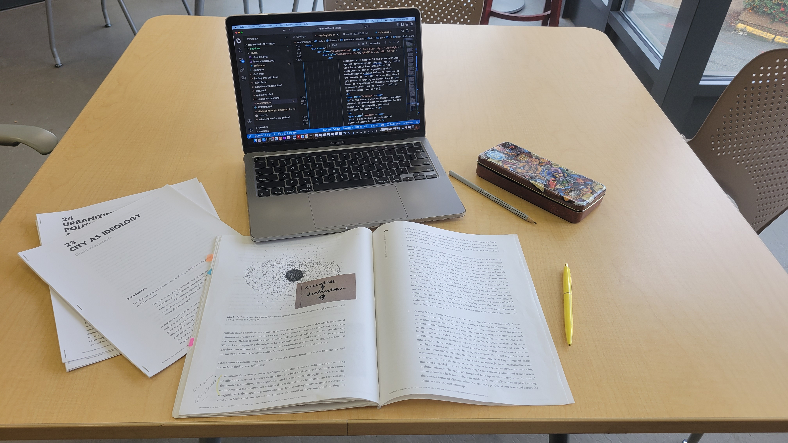
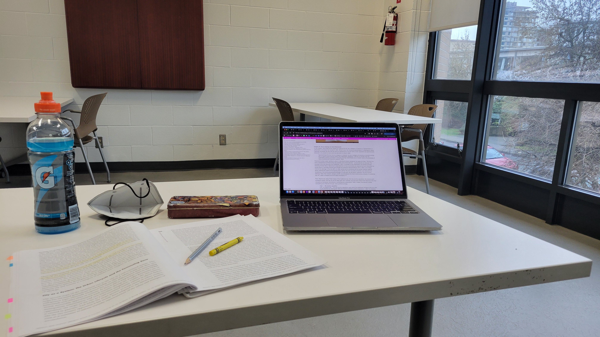

>The Surrounds (Simone 2022)
>Seeing Like a City (Amin and Thrift 2017)
>"The Metropolis" (Gordillo 2019)
>Lively cities (Barua 2023)
>"Racial Feralization" (Valayden 2016)
>"Productive tensions?" (Martinez et al. 2021)
>"Scale Critique for the Anthropocene" (Woods 2014 & 2022)
>"Who’s Afraid of Postcolonial Theory?" (Roy 2015)
>Ordinary Cities (Robinson 2006)
>The Production of Space (Lefebvre 1991)
>"Planetary Urbanization" (Brenner and Schmid 2011)
>"The Urban Question as a Scale Question" (Brenner 2000)
>"OUT IN SPACE" (Angelo and Goh 2021)
>Implosions/Explosions (2021)
>Vibrant Matter (Bennett 2010)
>"Urban everyday politics" (Beveridge and Koch 2019)
>"Urban way of life as survival" (Guma et al. 2023)
>"Notes on a Southern urban practice" (Bhan 2019)
A delightful way to enter my comps, this read was recommended by a companion as we walked past Victoria Park. Since moving to Vancouver in 2021, I've developed meaningful relations with city parks nearby where I've lived. First it was Chaldecott Park and West Memorial Park, where I'd go and read or take a phonecall or meeting and sit in the dugout or beneath the huge trees. When it snowed, my roommate and I tried to sled down the slight slope in West Memorial. Then it was Jonathan Rogers Park where the swing chains are super long and you can see the mountains if you swing high enough. Then Granville Park, a sunken park where the fog collects in winter, and where my friend and I would meet halfway between our apartments to catch up. She's moved away now but I still walk there to call her. There are many other parks across the city I frequent less often but are still very dear. Among them, Victoria park for me is a place to paint little canvases with friends in summer, a shady spot to read a book after walking there on a whim, a place to use the bathroom and walk in circles while I kill time before an appointment, a manifested encounter, and the destination of the trans march and dyke march (on different years) where I connected with friends and missed connections. Although I know Vancouver is unceded territory and that city parks occupy stolen indigenous lands, I hadn't dug deeper into the history or political ecology of the specific parks I use & frequent. I was therefore excited by this recommendation, and figured it would make a good introduction to my comps reading given that I read around the city (often in parks) and specifically have been attempting to read urban political ecology as an ethic through my urban practice(s) (see up my alley).
Four main chapters, written by four members of a family who's long lived at the corner of Victoria aka Bocce Ball Park, explore the tensions and joys of city parks on occupied land. A photo essay and set of poignant interviews with longtime park goers are folded between a critical introduction and overview of "the city park" as a colonial architecture, and an archival tracing of the land title of what is now the City of Vancouver's Victoria Park. Written by four white settlers who have lived in Vancouver for quite some time, On This Patch of Grass approaches parks from four entwined threads (3) which I summarize as use, regulation, parks as instruments of settler colonialism, and parks' open-ended nature which affords the possibility of their being remade. The book illustrates a serious and head-on working through of what it means to hold dear and meaningful those attachments to "public" lands that not only are stolen but mark settler occupation's continued cultural, ecological, and territorial dispossession. Park users are unequally policed, both by cops and members of the neighborhood community. "We want to tell part of the park's story here, to interrogate it as a place, a particular kind of urban subjectivity. But more than that, we want to use it as a vehicle for thinking about occupations, the uses of urban parks, the quasi-spiritual claims for the natural world and the history of this city" (9).
Throughout particularly the introduction (Chapter 1) and first chapter on city parks (Chapter 2), but also the last chapter on land titling (Chapter 5), I appreciated the presence of urban political ecology deployed to denaturalize, historicize, and politicize city parks. "No park is innocent...Parks, urban or not, are exactly as 'natural' as the roads or buildings around them, and they are just as political. Every park in North America is performing modernity and settler colonialism on an everyday basis" (2, see also 39). Tuning in not only to the collaborations and easy multiplication of use in Victoria Park but also the frictions between park users/uses, husband and father Matt Hern calls out the biopolitics of park theory as well as (or instantiated by) The City of Vancouver Parks and Recreation Board, which laud 'diversity' and 'accessibility' and, in the latter's case, reconciliation and Indigenous sovereignty, while determining acceptable uses (for instance, stalling a collaborate non-Indigenous and Squamish dance in Stanely Park due to settler-bureaucrats misunderstanding Indigenous protocols (32)) and quelling more rambunctious users. "The history of urban parks is one of landscaping and scenery, of utility and improvement, regulation and discipline" Mat Hern writes, "Parks claim to uplift people...they are the city-but-not-the-city..." (41). When I asked what it means to generate knowledge from within and as part of the city, these spaces of respite are not exempt (this becomes more obvious the moment they turn from uplifting to potentially unsafe milieus as I'm hollered at late at night). In other words, the VPL or the bus or "downtown" are no more "the city" than the scrap of park at the intersection of McLean and Charles where I sat reading this chapter on the "third bench", as two construction workers called it in their surprise that their were more benches than they had noted on a previous lunch break. With all its harmonies but its especially frictions, Victoria Park, Matt, Selena, Sadie and Daisy contend, is an exemplary (though not exceptional), lens to address the book's aims: "what I admire so much is the visibility in Bocce Ball Park. The politicization of the park and all its refusals are right there, unmistakable, irreverent. Rather than pacifying the city, this park highlights and amplifies it" (38).
In the last chapter, wife and mother Selena Couture traces the land title's changing hands using archival evidence from the Vancouver Public Library (VPL). What I found most remarkable was how she began the chapter by describing her bikeride home from VPL Central. Including the surrounding visual and affective detail, Selena itinerates her journey along Seymour Street, Dunsmuir, the Viaduct, Keefer Street, Keefer Place, Keefer Ave, Main Street, Hastings, Keefer again, Campbell, across Hastings, then onto Powell Street, across Clark Drive, on to Odlum, then up Grant Street, across Commercial Drive, and finally to the southwest corner of Bocce Ball Park where she dismounts at home. I can vividly imagine her route from downtown to east van. On the next page, we learn she's taken this route intentionally so as to ride along the streets named after the figures whose hand in the urbanization of Vancouver and the titling of Victoria Park she's about to elaborate. In beginning her chapter like this, she denaturalizes the names which too easily become, for settlers at least, "the background to our daily lives and are repeated in such everyday and mundane ways that they have little meaning attached to them anymore — other than as a way to mark an address" (115). To me, that's the start of generating a situated knowledge that thinks with place.
As a whole, I think this book directly attends to my question What of the structural can be seen in the everyday? in terms of taking an everyday site, composed of/by everyday activities, and denaturalizing, historicizing, and politicizing it to reveal how "that one square block articulates so many of the aporias [paradoxes or contradictions, points of uncertainty] of occupied urban land" (6). The authors take two simultaneously abstract and immensely, necessarily, concrete things — decolonization and city parks — and tackle their relation.
I'm still thinking this last analysis through but: The everyday reappears consistently throughout On This Patch of Grass. Of course, "We encounter parks in everyday and bodily senses" (2), but I picked up a on there being a larger sense in which 'the everyday' was both an affordance — how parks could be made through low-intensity refiguring of relations — and an obscurance to the very ordinary, micropolitical (not small, but rather relating to affect, as Barua clarifies), ways in which racial and colonial logics may work under the radar for white settlers in Vancouver. Parks are places where the "everyday work of biopolitics" plays out (29). Yet also, "everyday activities give us clues as to how we can share land in a decolonial sense" (5). Maybe a better question is after what else, or what more, can be seen/read in the everyday. Asking questions like What of the experiential is inflected, composed, or informed by processes not immediately perceptible? keeps these tensions in mind so as to not take city parks, for instance, for granted as a universal public good or accessible commons (33-34). It's a way to, like my creading question, tune perception to the non-phenomenological and sustain attention in practice (or in use) to what is not immediately perceptible for me but which composes parks as urban assemblages. I'm reminded of the paper "Can political ecology be decolonized? A dialogue with Paul Robbins" read last year for class. I believe the conclusion was no, not unless it's land back, but that doesn't mean you can't work in ways that are anti-colonial. While not about the community of practice that is political ecology, On This Patch of Grass seems to be using the tools of political ecology — tracking winners and losers as well as the persistent structures that maintain their disparity; narrating humans and nonhumans as dialectical; exploring contradictions; and making ontological claims while also attending to the epistemes from whence they are made (Robbins 2012, 87) - to possibilize decolonizing city parks: what if city parks were offered back to the Musqueam, Squamish, and Tsleil-Waututh Nations (44). While offering the land-title of Bocce Ball Park to the Nations whose land it is is not in my nor the Hern-Couture family's legal power, taking up urban political ecology as an ethic (rather than analytic) is a way to think seriously through settler-colonial architecture and the anti-colonial possibilities for remaking parks toward a decolonial future. And, to think these reworkings in practice - like Selena on her bikeride - refiguring relations in and through everyday activities (5) where before these tensions and potentialities may have gone unrecognized/un(der)considered. Thus, this book also responded to my question What are the colonial implications of my urban practices as a settler in Vancouver?
Seeing Like A City extolled the primacy/importance of infrastructure, arguing for the necessity of attention to and investment in urban infrastructure as a commons meant to benefit all. Amin and Thrift variously frame the city as a "machine" (), "as a sum of assemblages" (22), and "an infrastructural entanglement with considerable formative agency" (). They refer to "citiness" as "the combined vitality and political economy of urban sociotechnical systems, which we believe define the modern city" (3), where the sociotechnical systems considered are 1. urban metabolic systems, 2. mutual access choreographed by the navigation systems and infrastructure, and 3. human identity and affect as influenced by the (vital) urban landscape (4). "We want to see the city from the inside out" (4), they claim, and narrate citiness from the ground up. However, while the reader is assured "city never becomes City" (60), I found the book to rather imply city = City. I wished specific cities were explored, or attention payed to what specificity gives us and what it does not.
Opening with the core argument that "the infrastructure of the modern city can become the main focus of political action" (6), they conclude with a politics of infrastructure. "Modern" here and above initiates a division carried throughout the book between "modern cities" and the "developing world". (More on this in my summary of Ordinary Cities and Postcolonial Theory further down.) A politics of infrastructure, they argue, requires 1. visibilizing repair and maintenance work (recollecting artist Mierle Laderman Ukeles who Luke told me about) (84); 2. redesigning institutions which are no longer fit for purpose; 3. making intercessors for infrastructure (87); 4. changing infrastructures from tramlines to something that offers a sense of possibility (89); 5. a new vision of the world where all things form a constituency (90); and 6. injecting these into the interactions of everyday life.
Though their drawing from assemblage theory and some ATP gives space for the city to be more than the sum of its flows and infrastructure, again and again I got the sense that infrastructure, as ultimately the target of an exigent policy redesign, was something concrete, mediating the urban experience of space (51). "Infrastructure is a structure of contact that also defines what shows up as real at any juncture... It is the gross material of materiality" (). Additionally, though infrastructure is political as well as procedural (89), there were moments where I thought an urban political ecology analytic was in contrast—for example, the "natural sound" (52) of birds and such was contrasted to the mechanical noises of the urban milieu, and cities rendered as an "artificial environment" (43).
Planetary urbanization, mentioned once only and on the first page, is implicitly eschewed in favor of a more relational approach. Though not in the index, they appear to espouse the "urban age" thesis, indeed beginning their book "with an audit of the world significance of cities" (11).
I actually read the Martinez et al. (2021) paper “Productive Tensions? The ‘City’ across Geographies of Planetary Urbanization and the Urban Age” midway through writing this reflection, as it was really unclear to me how Amin and Thrift were approaching cities. I do believe it's more in an urban age vein, though the way they think about dynamicity even as they forward a policy agenda might portend the melding of the two.
However, Amin and Thrift do emphasize the extensive and intensive nature of urban infrastructure, framing the history of anthropocene as a history of urbanization (1) and dedicating an entire chapter to how "cities are one of the main products and producers of the Anthropocene" (34).
I actually noticed that multiple turns of phrase or conceptual framings articulated in Seeing Like A City (2017) which were taken up and extended by Lively Cities' "minor ecology of infrastructure": the focal shift from matter to materials (82), the idea of "meshwork" (116-119) and the idea of a lively city.
Overall, while Amin and Thrift clearly enjoyed writing this book and the illustrations were beautiful, theoretically, it fell short for me. I thought the way they used their citations held them back. For example, in discussing how cities think through eliciting and parsing feedback, they are quick to clarify that cities do not think in the same way as people. More so, they demonstrate the "noncorrelational thought" of, you guessed it, autistics. Then, and I kid you not, two sentences later they literally cite Erin Manning's Always More Than One—a lesser hyped but in my opinion beautifully sparse in comparison to later books, account of the more-than, choreography, and autistic perception. But how do they use it? To mark the multiplicity of "'scales and registers of life, both organic and inorganic' (Manning, 2013, p. 226), that resonate together in all manner of dispositional ways" (82-83). It just felt like they were not moved by their references the way Barua was, and used the most special and inspired works instrumentally. I don't know how you read Always More Than One and that's the standout sentence.
In this chapter, Gordillo draws on anecdotal experience of Las Lajitas' infrastructural and agricultural transformation from 2003 onwards (though its change was initiated by processes beginning in the 1980s and 90s) to elaborate the concept of "the metropolis". Over a period of 20+ years, Las Lajitas, Argentina, transformed from a rural town to hub of soybean processing involving both local/national and international corporations, stakeholders, and interests. Its transformation, Gordillo emphasizes, "did not involve the growth of a self-referential, bounded object. On the contrary, those assemblages of roads, machinery, vehicles, and silos were all designed to facilitate the transportation of soybeans and their industrialized derivatives to densely populated urban centers across the world" (68-69). The chapter then lays out how the rapid and intensive urbanization/industrialization/infrastructuralization in places far and discontinuous from cities, places like Las Lajitas, is better understood not as the extension of a single city but rather as the part of the metropolis at work.
The metropolis is "not an extended version of 'the city'" (69) - an urban agglomeration or "conurbation" as repeatedly described in Seeing Like A City - but rather the assemblage of metabolic infrastructure (and more) through which an urban agglomeration reproduces itself and expands. While the metropolis cannot be grasped simply from a god's eye remove, the "planetary scale" is not entirely eschewed. Gordillo's chapter at once critiques and extends planetary urbanization, parsing totality from totalization: "the totality posed by planetary urbanization is crucial for thinking holistically about the Anthropocene" (73). A "nontotalizing totality" (76), the metropolis is presented as "a heuristic, concrete abstraction to name the materiality of the continuum that moves matter from one continent to another in order to reproduce and expand the metabolism of the largest urban agglomerations on Earth" (69, emphasis in original). Gordillo's attention to nuance and what a framework of planetary urbanization can offer resonates with the argument made by Martinez et al. (2021) to bring planetary urbanization into dialogue with the urban age thesis. However, while Martinez at al. (2021) suggested the city itself as a heuristic, Gordillo resists re-posing the essentialized city form.
In using the term Anthropocene, however, Gordillo is not centering/exceptionalizing human activity so much as describing the reality of there being no outside to climate and landscape change. He goes on to describe the "Metropolis as...infrastructure of the Anthropocene" (93) in that the metro-bolic infrastructure (my shorthand) described above is unevenly intensive, marking some "areas of the planet with a high density of infrastructures created to" feed the voracious metropolis (83). These high density areas Gordillo calls "zones of imperial extraction" (83). Not only are capitalism's free trade and neoliberal deregulation and privatizations "legal-territorial technologies" for creating and maintaining these zones, more and more, infrastructures and logistics are too (83). Thus, the metropolis is an imperial constellation (83).
This approach to infrastructure is markedly different from Amin and Thrift's in Seeing Like A City. Methodological cityism aside, in claiming "cities are one of the main products and producers of the Anthropocene" (Amin and Thrift 2017, 34), Amin and Thrift missed attending to the imperial nature of cities' (and the extensive and intensive infrastructure that exceeds their bounds yet reproduces them) toll on the environment goes unaddressed. However, there are were a couple potential points of resonance, or at least one: the commons. Though Amin and Thrift position infrastructure itself as "the essential urban economic commons", they do call for policy to recast it from a means of private profit to that of the equitable distribution of public services. This includes the design as well. Gordillo, on the other hand, assumes a commonplace understanding of what the commons is, and, through examples of local and state resistance to "legal-territorial technologies" (essentially Monsanto tried to stop and frisk trucks for patented seed as they left silos in Rosario but unlike surrounding countries, seeds cannot be made private property in Argentina), illustrates the metropolis as "a generative space of collective encounters that offers the potential to reinvent the commons" (71).
I found this chapter excellent to think through a reframing I wouldn't have otherwise encountered. For instance, Barua, while also critiquing planetary urbanization though for other reasons, defaults to using "the metropolis" as stand in for an extended city. Reflecting on this reading I think I'll re/read scale critique(s) for the Anthropocene next.
More than halfway through reading Lively Cities, I went without the book for a day and read this article on "Racial Feralization" because I thought it could elaborate the figure of ferality also employed used by Barua, as well as bring it into discussions of race and the deployment of racial logics to govern populations in terms more specific to the human. Though not an animal geographer myself, I have so much added appreciation and respect for Barua's insistence on the importance of attending to other than human lifeworlds in the city when I return to literature discussing similar figures but devoid of the nuance present in accounts that feature the more-than-human as at minimum present, active agents in co-constituting the urban fabric.
In this paper, Valayden suggests contemporary governance strategies wield/leverage potential risk of disaster, whose increased frequency and intensity results from planetary urbanization, as legitimation to deploy racial logics to order cities. "Racial feralization is racial governance in the age of planetary urbanization" (11). Unquestioningly taking planetary urbanization as the current state of affairs, he "argue[s] that racial feralization, as a conception of race, has reappeared as a problematic of government in the context of a risk-society..." (Valayden 2016, 3, emphasis in original). Furthermore, the stakes of the risk are existential. Valayden, along with "the majority of race scholars", contends that "the critique of race must take place through a critique of philosophical humanism" (2). Closely reading Foucault, he points to a pitfall of many interpretations that take 'Western episteme' "as an empirical reality" (2) rather than an analytic to understand how 'Man' is cohered and maintained (3). Valayden suggests "racial feralization" as a parallel discourse to modernity/coloniality, one which "refers to the ever present potential that humanity will slip back into and blend with nature" (3). "racial feralization is the future posited by the discourse of government where a catastrophic engulfment threatens the human form, and where decomposition and decay will reduce the planet to a volatile landscape of random violence. Racial ferality inaugurates a form of governance at the threshold of the future survival of the human race" (14) Racial feralization thus provides a counternarrative to the dominant discourse which assumes infinite progress and the one-day obsolescence of 'Man' (rather than seeing the overrepresentation of the former mentality tied to the impossibility of the latter (2)). Taken as "an analytic and not an empirical fact" (18), racial feralization is a way to understand how racial logics persist in (biopolitics operating on) fears of loosing the human/'Man' - and, therefore reveals philosophical humanism as never all that "self-assured" (3).
To note another particularly vivid passage:
"Racial feralization represents the threat that the human will be engulfed by nature, and that human life will be reduced to formlessness and random violence, devoid of any ability to create meaning in the world. That is, the symbolics of race, so central to modernity's self-understanding, would be undone by the impossibility of symbolization...racial feralization has been revived as a problematic of government ot extend the matrix of race ot populations surplused by neoliberal capitalism. Racial ferality acts as a principle of legitimation to govern the perceived exponential increase of catastrophic dangers in a risk society whose context is planetary urbanization" (18)
Valayden's unquestioning deployment of planetary urbanization as the organizer of our current world to me read ironically similarly to taking "Western episteme" as empirical fact. He also doesn't seem interested in delving into the construction of "disaster" or "natural disasters" for that matter. There was no specific populations described even though an array of examples come to mind. And, of course, no mention of how the "matrix of race" has been extended to nonhuman populations "surplused by neoliberal capitalism" (18) and those already in beastly positions.
Racial feralization is repeatedly posed as a "problematic of government", but I would have liked further elaboration of the "problematic" at hand. Indeed, I felt the same language was used repetitively to re-state the original claim. I was left confused as to how racial feralization was at once a "threat" and "analytic" - to me it seemed like Valayden was deploying it in one way, and governments were deploying it an other. Moreover, and maybe it's because I don't have a background knowledge of critical race scholarship, but it seemed "race" as a constructed category and "human race" as species slipped into one another.
(The feared dissolution of the human race as a species, not necessarily through dying out but through loosing coherence as an ontological category, reminded me of Simone's description of what he meant by "from extinction to abolition". Unfortunately and strangely Valayden, to my recollection, didn't so much attend to the nuance in extinction, not only as proffered by other scholarship but in the difference, within his own argument, between the dissolution of the human as a category distinct from nature and the dying out of the human species, conceivably similar or identical though those two feared fates may be. Again, this reiterates an absence of attention to those already in beastly positions.)
In Lively Cities, Barua explicitly attends to how racial logics been extended to nonhuman populations through anticipatory fears of the stranger. In chapters 3 & 4 of Lively Cities, where ferality features most prominent, Barua takes his analytic developed in the context of (trans-species Macaques ethologies in) Delhi to another postcolonial city, London, where he uses the figure of ferality to explore (and this, like any attempt to summarize this book, is an oversimplification) how the movement of more-than-humans in and out of the frame of lively capital and affective relations across species divides offers another way to meaningfully understand the material politics and practices of urban inhabitation and urbanization itself.
True to his mode of argumentation throughout the book, Barua articulates the feral in both major and minor terms. (Major ≈ canon, arborescence, human-centered, god's eye, top-down, etc.) Major connotations of the feral include breakdown, imageries/realities of predation by the rich, and apprehension of forms that exist as neither domesticated nor wild—those once domesticated that escaped and now live in-between,likened to loose animals or criminals ranging the otherwise ordered/orderly city. However, "as a theoretical category constituting the outside to capital, ferality becomes a productive entry point for a minor articulation of cities composed It is the major figure of ferality that Valayden pursues.
In the chapters on ferality, Barua is particularly interested in feral Parakeets—those that escaped or were released and which now proliferate London. Parakeets began being brought to Britain from South Asia and West Africa in the early 1900s as part of the exotic bird trade, though the current feral population of 8,600 breeding pairs (106) stem from escapes around 1969 (109). Feral parakeets have created an urban niche for themselves that, contra invasion biology and biotic nativism stoked sentiments, there is no evidence is negatively impacting "native" species. Actually, some species have changed their habits in relation to Parakeets. Though London's verdant and gregarious population of feral parakeets draws mixed sentiments from individuals, many enjoy feeding the birds, both at home at a bird feeder or outside. The affective relations Parakeets have developed with humans contribute to their infrastructural niche. Other contributors to their proliferation and thriving include the staggered bloom-times of urban flora, also introduced via imperial importation. Over generations, Parakeet's genetic and behavioral changes in relation to London's urban environment and flora and fauna mark a novel form of evolution and index Barua compellingly calls "recombinant urbanisms".
In Valayden's account, racism morphs, no longer legitimated through establishing people in hierarchies but forstalling catastrophe (12); "The symbolics of race - the categories that define fixity - are allowed to decompose through individualization and hybridization up to the point where this degeneration signals the threat of racial feralization" (Valayden 12) This - immediate connection to how xyz barua multiculturalism and diversity - more the norm... what becomes object-targe? One Londoner Barua talked to about the Parakeets said "I want to see bright people, in muted landscapes" (153).
Barua would therefore agree with Valayden on the bioplitical deployment of racial logics:
"Feralization enters discourse and practice as a problematic of government and allows various agencies to identify, name and govern a population in racial terms. In turn, it legitimizes the application of a number of techniques of sorting and technologies of control and care to those identified as feral" (Valayden 2016, 18)
though Barua would likely not agree with Valayden that planetary urbanization is responsible. Indeed, in the next chapters which I read after finishing this paper, Barua makes the case for viewing the pastoral as immanent to cities, and the urban question being just as much an agrarian one.
I read this in order to clarify my reading response for Seeing Like A City (2017), as it seems Amin and Thrift eschew planetary urbanization for a more relational approach, but then cite the urban age. So, my question is, are planetary urbanization and the urban age the same thesis?
To answer: definitely not! The urban age thesis emerged in 2007, when half the global population were deemed to be living in areas defined as urbanized. While urban age discourses collapse the urban and the city by emphasizing the latter as a political and economic driver, planetary urbanization de-centers "the city" as a discreet and bounded place, shifting focus instead to the "relentless modification of the socio-spatial conditions of the planet under late capitalism" (1013). Planetary urbanization recognizes urbanization processes as multiscalar and extensive, enrolling areas not discreetly urban. Thus, "By transcending the urban/rural dualism - a key assumption underlying the partitioning of urban and rural areas that sustains the urban age thesis - capital accumulation, state regulation, common resources privatization, or socio-environmental degradation are conceptualized as constitutive processes of the planetary urban condition, rather than socio-spatial qualities ascribed to specific types of settlements" (1016). Attention to areas outside city limits enrolled in processes of urbanization is required lest we fall into methodological cityism. Whereas the urban age framing persists in multilateral policy practice, planetary urbanization is increasingly a commonplace framework in academic theorizing.
Citing limited exchange between the two theses, this paper seeks to bring them into conversation. Planetary urbanization's transcendence of dualisms, the authors argue, risks missing local practices emergent when the city is approached as a political community. Finally, they suggest two pathways for "more-than-academic intervention" through "critical and strategic deployment of the city as a concept" (1018) or "heuristic" (1017). First,
"recognition of significant work that has been done to insert the experiences of Southern cities into global policy agendas, and the possibilities that this holds for further critical diversification of what is understood by 'urban' challenges in those agendas. Deeper appreciation of the diverse forms, trajectories and capacities of cities in the majority world (among academics as well as multilateral agency actors) is an important corrective in its own right to inherited, normative conceptions of 'the city' based on historical experiences in the North...Southern urbanism could infuse global urban policy with more critical accounts of contemporary urban conditions, including those associated with planetary urbanization."
And second, "foreground[ing] human dimensions of various geographies of urban transformation" (1019), re-valuing the city as a site of local political communities where the right to the city is, at a policy level, disentangled from the city-centric logics of provisioning markets and privatizing public assets (2017).
This work, of "disentangl[ing] the legitimation of specific urban normative imaginaries within the very discursive space that has engendered them", the authors suggest are "scholarly efforts" (1017). Does this reiterate an academic-policy divide, where the latter taking up theories of the former will 'get it wrong' without scholarly intervention?
Anyway, probably written more than enough reflection for this paper but it did absolutely answer my question and is a good point of reference.
Woods, Derek. 2022. "Scale Critique for the Anthropocene, Part Two." New Formations: A Journal of Culture/Theory/Politics 107 (107): 155–70.
The first scale critique is one I was recommended a year or more ago, and have returned to a couple times since, most memorably in the third week of a geographical political economy course taken last fall after reading Eric Sheppard's (2002) "The Spaces and Times of Globalization: Place, Scale, Networks, and Positionality", Nagar et al.'s (2002) "Locating Globalization: Feminist (Re)readings of the Subjects and Spaces of Globalization", then Niel Brenner's (2001) "The limits to scale? Methodological reflections on scalar structuration" followed by Sallie Marston and Neil Smith's (2001) response. This paper has stuck in my mind as, while not directly referenced in my reflection then, instigated a curiosity at how "geographical scale" was taken to mean something self evident.
I read Sheppard (2002) and Nagar et al. (2002) to be discussions of positionality at different scales. While both Sheppard (2002) and Nagar et al. (2002) espouse positionality, Sheppard's is at the scale of 'territory' or 'territorial unit' whereas Nagar et al. focus on the scale of the body, household, and community. Sheppard (2002) believes that place, scale, and networks aren't enough to make sense of globalization in a moment when digital technologies are refiguring space by shrinking contact times. Drawing from feminist theory, Sheppard (2002) argues "connectivity across space/time requires attention to… positionality" (315). He uses "positionality to describe how different entities are positioned with respect to one another in space/time" (318, emphasis in original). Borrowing from physics, he suggests the 'wormhole' as a way of describing relationships between territories with similar positionalities. The wormhole transcends Euclidean space, folding space/time based not on proximity—a measure of physical distance—but on the "intensity and nature of interconnectedness…" (Sheppard 2002, 324). In contrast, what feminist analysis brings to economic globalization literature is the call to theorize from from below—that is, starting from the perspective of marginalized people and economic spheres (Nagar et al. 2002, 263). Nagar et al. (2002) go on to evince the often contradictory experiences women have as subjects of globalization. Across both papers, I found scale to be just too tidily constructed and delimited. Thinking with the readings from Week 2, I wonder whether 'body' and 'household' can so easily be scaled as bounded entities? The asymmetric porosity of home and work call into question the territorial unit of a household as being a discreet scale: when a wife brings her "'work'" to her husband's office, it is "hardly an invasion"; yet, when a husband brings his work home, he invades the household with the "sphere of paid work" (Massey 1995, 494). When is a body localizable as an individual actor and when does it interpellate a (domestic; professional) sphere? Both Sheppard's (2002, 318) definition of positionality and the contradictions playing out in everyday experiences suggest positionality has everything to do with scale. Indeed, I'd argue positionality is a scalar relation.
Though I was heartened in my expectation that Brenner (2001) would more explicitly account for the construction of scale, his blunt jab at Marston (2000) and subsequent provocations served only to intensify my feeling that something was missing. Brenner (2001) does three things. First, he critiques Marston's (2000) article on the social construction of scale in which she focuses on the geographical unit of the household to analyze the role of social reproduction and consumption on capitalism's scalar structuring. Brenner (2001) argues that other lexicons such as those of 'territory', 'locale' and 'place' would be better suited to describe the household, and that scalar concepts should be saved for discussions of relations and embeddedness. Second, Brenner (2001) differentiates between what he sees as singular and plural interpretations of the 'politics of scale'. The singular understanding, which he ascribes to Marston's (2000) study, focuses on a "self-enclosed geographical unit" where "scale is understood essentially as a boundary separating the unit in question — be it a place, a locality, a territory or any other spatial form — from other geographical units or locations" (599, emphasis in original). A plural 'politics of scale', by contrast, is concerned not only with the "production of differentiated spatial units as such, but…their embeddedness and positionalities in relation….The referent here is thus the process of scaling…geographical scale is understood primarily as a modality of hierarchization and rehierarchization through which processes of sociospatial differentiation unfold both materially and discursively" (600, emphasis in original). Brenner (2001) advocates for this plural understanding of the 'politics of scale' as he believes it appropriately captures the "determinate…positions [of geographic scales] as differentiated units within multitiered sociospatial hierarchies…" (600). Third and lastly, Brenner (2001) contributes eleven propositions for investigating 'scalar structuration', defined as a dimension of sociospatial processes that become vertically hierarchized into "distinct spatial units" (604).
What I found lacking across all papers (but especially Brenner (2001)) was attention to the presupposition of a singular scale analytic, facilitated in part by the collapse in meaning of 'scale' and 'unit'. Scale analytics is my provisional attempt at identifying the framework of intelligibility which relationally configures "distinct spatial units" (Brenner 2001, 604). Scale analytics orient so-called scale-units in scalar relation. For example, the following is the scale analytic of Google Maps which calls graphical elements (units) into relation by a framework of proportional distance:  . I can rescale this scale by treating it as an image. In doing so, I impose an entirely different scale analytic, one of height and width measured in pixels. What of scale-units enrolled in multiple scale analytics at once? Brenner's fifth proposition edges towards to what I have in mind but defaults again to scales of positionality: "Each geographical scale is constituted through its historically evolving positionality within a larger relational grid of…sociospatial processes, relations and interdependencies. Consequently, the very intelligibility of each scalar articulation of a social process hinges crucially on its embeddedness within dense webs of relation to other scales and spaces" (606). I suggest a positionality of scales, nay, a positionality of scale analytics. This would allow for a multiplicity of scale analytics to exist simultaneously while remaining reflexively responsive to the politics of choosing one to frame intelligibility. A positionality of scale analytics.accounts for positionality both of relations between scale-units and how the relations themselves are an effect of the scale analytic which configures them. In this way, scale-units such as 'body' or 'household' are provisionally configured as "scalar articulation[s]" (Brenner 2001, 606) or "articulated moments in networks of social relations and understanding" (Massey in Sheppard 2002, 312).
In Pollution is Colonialism, Max Liboiron (2021) writes: "Scale is about what relationships matter within a particular context." Thinking with a scale analytic as a relational configuration—one of many possible frameworks of intelligibility which renders connections determinate in just such a way—I ask in response to Brenner's propositions for investigating scalar structuration through a plural politics of scale: Is naming "context" as that which relationally matters a scaling practice? If yes, might the "context of the context" then become a positionality of scale analytics?
The reason I suggest "urban everyday" as a scale analytic is because of this thinking. As I write in my List Overview, I turn to the "urban everyday" as a diffractive apparatus for investigating the infra/structural as it articulates in mundane events, encounters, and arts of inhabitation. Taking neither "urban" nor "everyday" for granted, I seek instead to think them through one another towards an understanding of their organization of a scale analytic.
. I can rescale this scale by treating it as an image. In doing so, I impose an entirely different scale analytic, one of height and width measured in pixels. What of scale-units enrolled in multiple scale analytics at once? Brenner's fifth proposition edges towards to what I have in mind but defaults again to scales of positionality: "Each geographical scale is constituted through its historically evolving positionality within a larger relational grid of…sociospatial processes, relations and interdependencies. Consequently, the very intelligibility of each scalar articulation of a social process hinges crucially on its embeddedness within dense webs of relation to other scales and spaces" (606). I suggest a positionality of scales, nay, a positionality of scale analytics. This would allow for a multiplicity of scale analytics to exist simultaneously while remaining reflexively responsive to the politics of choosing one to frame intelligibility. A positionality of scale analytics.accounts for positionality both of relations between scale-units and how the relations themselves are an effect of the scale analytic which configures them. In this way, scale-units such as 'body' or 'household' are provisionally configured as "scalar articulation[s]" (Brenner 2001, 606) or "articulated moments in networks of social relations and understanding" (Massey in Sheppard 2002, 312).
In Pollution is Colonialism, Max Liboiron (2021) writes: "Scale is about what relationships matter within a particular context." Thinking with a scale analytic as a relational configuration—one of many possible frameworks of intelligibility which renders connections determinate in just such a way—I ask in response to Brenner's propositions for investigating scalar structuration through a plural politics of scale: Is naming "context" as that which relationally matters a scaling practice? If yes, might the "context of the context" then become a positionality of scale analytics?
The reason I suggest "urban everyday" as a scale analytic is because of this thinking. As I write in my List Overview, I turn to the "urban everyday" as a diffractive apparatus for investigating the infra/structural as it articulates in mundane events, encounters, and arts of inhabitation. Taking neither "urban" nor "everyday" for granted, I seek instead to think them through one another towards an understanding of their organization of a scale analytic.
Derek Woods' main argument is that the human "species" is not the subject of the Anthropocene. This kind of scaling up of human agency belies how patternings of relationality cohere differently at different scales, or zoom levels. This phenomenon, which occurs with abundance across every discipline, he calls "scale variance." Scale variance describes how "the observation and operation of systems are subject to different constraints at different scales due to real discontinuities" (133). It follows that "The scale-critical subject of the Anthropocene is not 'our species' but the sum of terraforming assemblages composed of humans, nonhuman species, and 'technics'" (134).
The opposite of scale variance is the smooth zoom effect (134) where "Scale is assimilated to measure" (135). By this latter statment, Woods is refering to when the scale itself is a unit of measurement (133). For example and like I described in my response above, when a literal scalebar that dictates measurement is taken to be continuously scalable. Moving "behond measure" "scale critique emphasizes disjunctures and incommensurable differences among scales. Scale variance refers to the thresholds that constrain biophysical, technological, and social becoming, thresholds beyond which scale effects influence how we observe systems and how they work" (135).
My main discontent with this first paper is that while Woods uses an animation of zooming in on the world by powers of ten while the human, panoptic vioce-over remains a constant scale. This might seem too technical but if you consider the "planetary digital zooming" enabled by ubiquitious interactive webmaps/interfaces like Google Earth where the human viewer does remain positioned at the same scale, staring at the screen, until more recently, such webmaps are full of disjuncture. By this I mean that the tile layers that underly them are sets of static images at discreet zoom levels which load as you zoom. If you play the below video, you can watch the tiles load around the periphery.
AND
Robinson, Jennifer. 2006. Ordinary Cities: Between Modernity and Development. Routledge
In Ordinary Cities (2006), urban geographer Jennifer Robinson effectively argues for 'detonating' (6) the hierarchy of cities established by categorizations such as "first world" and "third world", "developed" and "developing", suggesting instead every city be recognized as ordinary. If every city is taken to be ordinary, then every city can be seen to demonstrate the dynamism, creativity, and innovation ascribed to modernity. Critically thinking through concepts of modernity and development/developmentalism (both of which are products of a colonial past" (4)), Robinson aims to lay out a post-colonial urban studies where difference is gathered as diversity, not incommensurability (6, 9, see also 41). Robinson suggests "a cosmopolitan urban studies" where theories are just as diverse as the cities they are applied to, recognizing that the incorporations of elements borrowed from elsewhere compose the urban imaginary of any given ordinary city.
Robinson begins her argument by "dislocating modernity", outlining the chronological and then spatial construction of its antithesis. Modernity, like eurocentrism in Ananya Roy's essay, is a story the West tells itself (20). However, there are some important narrators. Robinson traces how key words/concepts like "primative" and "traditional" were used by Chicago School urbanists Robert Park and Louis Wirth to conjure an Other to "the rational practices of a specifically urban (and Western) modernity" (21). The binary instantiated by these ideas circulated widely (amongst urbanists focused on the West). Greatly influenced by Park, Georg Simmel (who Park and Wirth draw from as well) argued that in cities, people develop a new sense of needing to stand out, to individualize themselves in manners not necessitated by folk or primitive life (25). Simmel's theory that urban inhabitants developed a blasé attitude to protect themselves against the overstimulation of the city (45) was of great significance to the work of Wirth.
Admirer and critic of Simmel, Walter Benjamin (27),
"explore[d] the concept of Western modernity by postulating a dialectical relationship between conceptualisations of the modern (here and now) and the idea of tradition, antiquity, or the primative. Benjamin offers a critical account of this relationship between modernity and tradition as produced within modernity itself...A dialectical imagination, then, insists on the co-presence and mutual interdependence of concepts of modernity and tradition." (28)
Robinson adeptly lays out the strengths and limitations of Benjamin's analysis, showing that while binaries are repeated, his dialectical approach (more akin to Simmel in this than Park or Wirth) enabled more comparative maneovers.
(I wasn't totally sure what Robinson meant by taking dialectics at a standstill - a mode of analysis she takes from Benjamin to apply in Ordinary Cities. I will reference The Arcades Project pg 925 though and return to this.)
Narrations by the Chicago School and interlocutors of a Western modernity set in mutually exclusive contrast to the primitive and traditional elsewhere/when didn't go unchallenged, simply unremembered. Robinson cites the comparative urbanisms of a handful of anthropologists who, from the 1940s to 1960, pushed back on the above narratives by locating the so-called tribal and traditional as already within the city and part of what it meant to be modern. Writing from Zambia (part of the Copperbelt), these anthropologists - collectively known as the Manchester School - advocated for an expanded "right to be urban" (49). From the refashioning of discarded clothing (85-88) to lampooning amongst urban denizens from different tribal backgrounds (48) to women singing dancing as a means of finding community across different cultural backgrounds but a shared urban experience (88-90), cultural/folk practices became reworked in the city. Building on their work, others, such as Karen Hansen (who describes the refashioning of clothes above), continued writing against Eurocentric binaries. Unfortunately, the efforts of anthropologists such as J. Clyde Mitchell, Arnold Leonard Epstein, and Max Gluckman of the Manchester School have been largely left out of histories of urban studies, something Robinson seeks to rectify in taking on their comparative mode of analysis to dislocate and multiply modernity towards postcolonial urbanisms.
Of course given the above, Robinson debates whether or not to keep modernity as a term - if it's even capable of being "rescued" (8). This connects to Ananya Roy's (2015) discussion of what postcolonial theory does, and why, contra recent (to the article) dismissals, it matters. She articulates these dismissals' fundemental "misreading of historical difference as empirical variation; an analytical confusion between globalization and universalization and between generalization and universalization; and the valorization of Eurocentrism" (203). Opening the essay by reflecting on the difficulty of fitting eurocentric urban theories to her dissertation fieldsite, Calcutta, Roy makes the case for postcolonial theory as a means to "think relationally about cities" (207). She writes:
"For me, postcolonial theory is a way of inhabiting, rather than discarding, the epistemological problem that is Eurocentrism. Postcolonial theory then is not so much a way of interpreting and narrating the postcolony as it is a method for interpreting and narrating the West, or rather 'the stories the West most often tells itself about itself', to repeat Gregory's (2004:4) felicitous phrase." (205)
In further refuting "universal grammars", Roy, following Partha Chatterjee, emphasizes that postcolonial theory (and Subaltern Studies particularly) is concerned with the "'critique of liberal historiography'" (Chatterjee qtd in Roy 2015, 202). This, to me, bears resonance to what Robinson is endeavoring in both writing critical comparative urbanisms back in to the history of urban studies, and dislocating modernity from a teleological future of a primative and underdeveloped past. Writes Robinson:
"We need to find ways to write modernity outside of the historical time of the West. The only way to do this is to ensure that there are grounds for appreciating and experiencing the modern without necessary reference to the West, or Western capitalism. This means disconnecting the social transformations and cultural valorisations indicated by theories of modernity from assumptions about progress, and from any fixed geographical referents. Decentring the West in thories of modernity means seeking to understand the sources and sites of social transformation wherever they may be and allowing for newness and innovation, along with their cultural valorisation, to emerge and exist anywhere." (18)
The inhabitation of "modern" is therefore a carefully considered, tactical decision. The term's continued importance, Robinson concludes, is in no small part because "modernity" has been taken up and appropriated by cities historically left outside its ambit. Cities are increasingly identifying what it means to be modern for themselves, without direct reference to a Western originary.
"Where accounts of modernity in poor places have emphasised mimicry and have seen modernity as undermined by tradition, by poverity and, expecially, by racial difference, I want to stress the centrality of appropriation to modernity everywhere and to insist that modernity is borrowed, invented and valorised in both wealthier and poorer cities." (66)
As evidence, Robinson draws on architectural forms across New York City and Rio de Janiero, showing how not only did stylistic influences on New York come from a range of cities elsewhere (68-73), but "viewed from Rio de Janeiro at various moments, New York might be considrered to have been rather backward, in its commercial commitment to the populist moderne style for example, and its slowness in embracing a more contemporary and critical international architecture" (73). "critiq[ing] the idea of modernity as mimicry" (79), Robinson echos the 2000 Brazilian 'Cannabalist Manifesto' and Argentine writer Borges in arguing for the creative ingestion, the appropriation and recirculation, of modernity (79). In an/other example of architechtural appropriation, the skyscraper, an icon of modernity, was appropriated by Kuala Lampur which built the Petronas Tower in 1996; as the tallest buildings in the world at that time, they were meant signal to global capital that Malaysia was a place to invest (79-82). Eleswhere, both Johannesburg's 2010 and 2030 plan at the turn of the century featured the Hillbrow Tower, a communications tower originally built in 1971 during apartheid. Robinson describes the meaning of Hillbrow tower along with the Brixton tower, also overlooking Johannesburg and which was the tallest in Africa before the Hillbrow tower was built, as the meeting of "high modernism and high apartheid" (147).
In one of the handful of theoretically sharp reversals throughout the book, Robinson states and then asks:
In some ways, these apartheid towers in their dated modernity can stage a 'dialectics at a standstill' for us, bringing the dynamics of contemporary urban policy crashing together with the histories of apartheid. They might challenge us to ask, for example, who is being excluded in these new imaginative configurations of Johannesburg's futures? Are racialized pasts perhaps being reinstated in an era that is ostensibly committed to a non-racial polity? But in many ways, the appropriation of these towers from the architects of apartheid to symbolise the future of an inclusive and dynamic city speaks more of the potential for icons of modernity to be appropriated at will and to carry ambitions of global success across the historical divide of apartheid and post-apartheid government." (147)
Hierarchies, then, established through assumptions that wealthy cities' greater contritribution to the world economy establishes them as more important sites of inquiry and innovation than poorer cities, contribute to a nonreciprical circulation of ideas wherein urban studies in the West are never expected to reference analytics developed in non-west cities, but the latter must always engage canon (168). It is necessary, Robinson argues, that urban theory and urban policy adopt a cosmopolitan urbanism where [xyz].
Elaborating on the "right to be urban" (49) she makes a compelling case for the "right to be modern" (77, 147).
In the second half of Ordinary Cities, Robinson critiques globalization and developmentalism in urban theory and urban policy, describing how the former leads to a focus only on wealthy cities driving the global economy and the latter, to an overemphasis in poorer cities to all that is failing while ignoring their vibrancy, regional importance and sigificant informal economies, and innovation. Both developmentalist and global- and world- city approaches to urban policy focus on either a small set of cities or a small part of cities to the detriment of the diversity of a world of cities. In contrast to global- and world-city framings, Robinson suggests urban policy focus on the city-regen level. This level of analysis, she believes, will bring the city back into view. (To me, the affordance of this scale specifically - and its definition - was in need of elaboration.) Though acknowledging the tensions and conflicts between the visions of different groups, she is in favor of city development strategies (CDSs): "The CDS initiative envisages an opening of urban policiy to the diversity of interests and activities in distinctive cities and imagines wide participation towards building a consensus visin for the future development of a city" (131). She makes the case for the importance of strategies aimed at both economic growth and innovation, as well as the redistribution of services; the latter is key in poorer cities where informal economic practices are a significant contributor to formal sector.
All in all, though absolutely riddled with copyedit errors and written in a style (so much) less dazzling than prior readings, I quickly warmed to this book because of its direct, if sometimes verbatum repetative, writing. I also tremendously respected the thoughtful cover design, and preface explaining it. Robinson shows skill in synthesizing and summarizing historical movements and moments - moving easily between broad connections and local specificity. Her comparative mode of reading reminded me of Barua, who also reversed the gaze as it were, taking an analytic developed in the concept of postcolonial Delhi and applying it to the postcolonial context of London's recombinant urbanisms. There were, however, many moments I wished for more clarifaction and elaboration. I also found her focus on the city, or city-region, didn't enable thinking through how the non-city, rural, agrarian, etc. is changing in response - how traditional ways of living and cultural practices not taken to the city change (or not). It was for this reason I liked Gordillo's account of the metropolis and attention to the making of extractive zones. While a comparative mode can trace trajectories from one city to another (170), those from city to "countryside" are perpetually (constitutivelly?) left out.
Furthermore, diversity in regards to the economy was left quite vague. The work of dislocating modernity from its (Western) originary and multiplying/plurilizing/diversifying it - showing "modernities that name themseles 'Western' are already appropriations and hybridisations" (78) — reminds me of the manoevres employed by J.K. Gibson-Graham (1996, 2006) to detonate capital C Capitalism. However, while Robinson mentions the "diverse economies" (114, 117, 142, 158, 166) and "economic diversity" (141) of ordinary cities, Gibson-Graham remain unreferenced throughout the book. Capitalism itself is unindexed, and appears only a few times in a taken-for-granted manner. What is meant by "global capitalism" (95, 102, 147) or "Western capitalism" (18) or "the global stage of capitalism" (147) goes unexplained. To me this is quite significant given "assumptions about progress" (18) are deeply read through a capitalist economic system. So, although modernity is refigured and relocated from a Western hegemony into an idea differentially cohered through circulating in and beyond cities, capitalism remains self-referential. When discussing Johannesburg's diverse economomy (there's even section devoted to it (see 161)), informality remains a nondifferentiated other to a diverse formal sector (e.g., 144). I just don't get how capitalism isn't interrogated as part of the idea of modernity. The diversity of urban economies Robinson references in regards to policy suggestions, then, seems really to be different kinds of "business environments" all in the formal economy.
Finishing my reading reflection in the VPL central branch.
This one took 2 weeks of steady reading. I can read dense texts but I really struggled with this one. I just don't have a grounding in the context or in discourses referenced. But, I will return to it again after I read my planetary urbanization literature. With time and maybe a second reading I could better grasp it. At least now I feel like I can read - if not fully understand - anything. And reading while not fully understanding is also a skill.
Citing the "far-reaching implosions and explosions of the urban at all spatial scales" - namely "the creation of new scales of urbanization", "the blurring and rearticulation of urban territories", "the disintegration of the hinterland", and "the end of the wilderness" (450) — Brenner and Schmid echo Lefebvre in claiming a contemporary state of planetary urbanization.
"Today, the urban represents an increasingly worldwide condition in which all political-economic relations, infrastructural geographies and socio-environmental landscapes are enmeshed.
This situation of planetary urbanization means, paradoxically, that even spaces that lie well beyond the traditional city cores and suburban peripheries...have become integral parts of a worldwide urban fabric...political-economic spaces can no longer be treated as if they were composed of discrete, distinct, bounded and universal types of setlement" (451).
(My summary of this is very quotes heavy as I'm still grasping what's being disucssed. I'll return and elaborate more in my own language later on.)
Also, what is the urban question?
In this paper, Brenner outlines the shifting nature of scale in relation to conceptualizations of urban spatiality under capitalist restructuring. He does so by tracing significant scalar rearragments and reterritorializations through the the 1970s, 1980s, and the 1990s (at the end of which he is writing).
"Build[ing] upon Lefebvre's thoretical framework" Brenner "explore[s] various implications of contemporary re-scaling process for conceptualizing the dynamics of capitalist urbanization in the late twentieth century. This essay elaborates two basic assertions: (1) that the problematic of geographical scale and its social produciton has become increasingly central to urban theory in the contemporary period of global restructuring; and (2) that Lefebvre's sociospatial theory contains a number of insights which are of crucial relevance to this problematic...for my purposes here, the concept of the urban question refers neither to a specific definition of the city nor to a particular approach to urban studies. Rather I understand the urban quesiton under capitalism as a double-edged sociopolitical problematic: it encompasses both the historical proces of capitalist urbanization and the multiple, politically contested interpretations of that process within modern capitalist society" (361-362).
The 1970s, Brenner shows, was marked by "the functional specificity of the urban" where "geographical scales" are "spatial expressions of social functions" (363). In other words, scale is defined by social function, where the "urban scale" was itself taken for granted as "the self-evident empirical centerpiece of the urban question" (364). Moreover, scales were understood to "operate as mutually exclusive rather than as co-constitutive territorial frameworks for social relations" (364).
The 1980s saw a shift "from scale-specificity to the production of space" following the first publication of Lefebvre's The Production of Space in 1974. Whereas the previous decade was specifically concerned with 'the urban' and processes at the 'urban scale', debates of the 1980s brought the supraurban into view. "Scales were no longer equated with unitary social functions but were viewed increasingly as material crystallizations of multiple overlapping political-economic processes" thouse "the historicity of geographical scales waas recognized only in a relatively limited sense" (365). Brenner describers the 1980s as an inversion of Castells' "conception of scales as the spatial expression of social functions" where "the social relations of captialism were now analyzed in terms of their distinctive patterns of agglomeration and territorialization on the urban scale" (365).
In the 1990s, "supraurban re-scaling processes" became an unavoidable reference to understanding the urban question. Writes Brenner: "If the urban question had previously assumed the form of debates on the functional specificity or scale-spacificity of the urban within relatively stable supraurban territorial configurations, in the 1990s the urban question is increasingly being posed in the form of a scale question" (366).
After outlining the shifting formulation of geographical scale across three decades, Brenner draws from Lefebvre's "notion of an 'implosion-explosion' of urbanization; his conceptualization of state spatiality; and his analysis of the politics of scale" (368) to articulate the necessity of multiscalar analyses and methodologies "for grasping...the role of cities as preconditions, arenas and outcomes of the current round of global capitalist restructuring" (375).
I appreciated this paper as an example ofactually engaging with primary sources. I have to think further about Lefebvre's differentiation of scale and level, where everyday is a level not a scale. As Brenner describes in footnote 12: urban and global operate simultaneously as levels and scales within lefebvres theoretical framework (368). What does this mean for Urban Everyday?
In this paper, Hillary Angelo and Kian Goh dismantle the three 'types' or registers of critique of planetary urbanization: empirical, epistemological, and theoretical. As two queer and feminist scholars for whom planetary urbanization features centrally in their work, Angelo and Goh take care to validate the political concerns of said critiques while effectively articulating the ways in which each counter fails at undermining the (intent of a) theory of planetary urbanization.
Angelo and Goh elaborate the three registers of critique leveled at planetary urbanization as follows. Critiques in an empirical register assume accounts relying on planetary scale commit universalizing abstractions which miss the concrete differences of localized particulars. However, as Angelo and Goh point out, "these scholars do not generally extend their analyses either to higher levels of abstraction or to larger geographic scales" (735). By disengaging from all but the immediate and specific, "this register of critique does not actually assess the primary object of its analysis: the global patterning of urban geographies" (735). Aligned with Gordillo's (2019, 76) framing of the metropolis as a "nontotalizing totality", Angelo and Goh argue that "the conceit of a planetary approach is to bring a 'totality' into view—not in order to homogenize or 'fetishize the oppressive ways of the world, but to negate them' (Goonewardena, 2018, 463). Critiques in the empirical registars have neither engaged with this core argument nor unearthed through their research other foundational processes that refute or seriously complicate the significance of planetary scale urban political-economic ones" (435). Critiques in an epistemological register call out planetary urbanization's seeming production of unsituated knowledges. Moreover, some scholars take problem with assuming a theory which, they argue, has gained salability because its theorititians and proponants are white male researchers occupying a systemically/institutionally privledged position. Critques of an epistemological register are thus political arguments (736) and while "political arguments are political strategies" (736), a political argument does not a sound argument make. While Angelo and Goh make clear their solidarity in commitment to "center[ing] feminist, people of color and queer embodied scholarship" (736) they take substantial issue with a politics that puts feminist and queer identities and perspectives "inherently... at odds with theories of large-scale processes" (736). I mean, yes, this seems like it should go without saying. Once again, "in rejecting a planetary urbanization framework on the grounds of its presumed erasure of grounded, embodied difference, its European history, and the whiteness and maleness of its primary adherents, feminist critics have not challenged the core theoretical provocations laid out in planetary urbanization theory" (736). Critiques in a theoretical register "attempt[] to reframe, extend or divert arguments in the planetary urbanization framework...[these scholars] re-read and extend Lefebvrian analysis, or bring in other theorists, or posit other forms of local and global domination" (736). Some theoretical critics argue for the consideration of other other planetary processes in relation to urbanization, and others still (who remain "outside our schema of critiques") reference "different notions of planetariness" alltogether. I will problematize this in a moment.
Though differing in angle and object of critique, all three registers identified by Angelo and Goh "share a core objection, which is to posit 'difference against abstraction'" (734). However, "they conflate two sets of questions: an ontological question of scale (how do we understand the relationship between small-scale, often local, and large-scale, often global, processes and phenomena?); and an epistemological question of theory-making (how and when do we move between the abstract and concrete in our analyses?)" (737). Drawing on their respective research in concrete places, Angelo and Goh demonstrate how their topics/conditions of study cannot fully be understood without recognition of urbanization processes occuring at a planatery scale. Indeed, far from limiting the extent to which difference matters in the study of a particular locale, planetary urbanization contributes a far less city-centric and Eurocentric understanding. If anything, planetary urbanization, they argue, "enforces a multiscalar perspective on urban processes and conditions and provides a view of interconnections among apparently disparate spaces and events" (742).
Let me circle back to the rendering of analytics which moreso embrace unknowability as outside their schema and so their generalized counterargument. This write-off to me signalled an insidious disengagement from world/ing views which would truly shake planetary urbanization. Angelo and Goh essentially dismantled the above empirical, epistemological, and theoretical critiques in the same fashion: by demonstrating how none actually engage the core arguments of planetary urbanization. Yet critiques that aren't based in reactionary, identity politics do exist and I read one of them last month: Maan Barua's Lively Cities (2023). Admittedly this was written after the publication of this paper, but I find it useful to consider whether its critique of planetary urbanization fits one of the above registers, and if not (well), what can be learned. Now Barua does level critiques in what Angelo and Goh would map as textbook empirical, epistemological, and theoretical registers: he critiques planetary urbanization as totalizing in its glossing over of the everyday and discrimination against thick description. Although he doesn't conduct a re-reading or extension of Lefebvrian analysis, Barua does offer a "different answer to neo-Lefebvrian calls for 'a new lexicon of sociospatial differentiation'", here referencing Brenner's (2013) Theses on Urbanization. "Contrary to neo-Lefebvrian critiques of thick description being an unreflexive conversion of everyday categories into analytical commitments, such description grounds processes of sociospatial differentiation in their richness and specificity, drawing attention to processes and scales missed out in calls for planetary analyses" (193). Yet Barua is not just positing difference against abstraction; he explicitly takes aim at the empirical, epistemological and theoretical tenets of planetary urbanization (see 192 onwards). He does this in two key ways relevent to this discussion: by articulating the urban formation as constituted by continually reinvented (195) pastoral (230), where "the urban and agrarian or pastoral are immanent to one another, lying on the same plane and working on one another from within" (193), and, by demonstrating how capital is not all encompasing. In both the postcolonial cities of Delhi and London, ferality marks lines of flight from capitalist commodification and terms of valuation. Indeed, Angelo and Goh themselves subsume modes of knowledge production that center planetary processes of colonialism and decolonization into just another way to "bring into view and challenge the dominance of capitalism and other global systems of domination" (Angelo and Goh 2021, 737). What if capitalism were not brought into view just for the sake of it? In other words, what is obscured by the impulse to read any other process, brought into view as a theoretical critique of planetary urbanization, as just another way to get at capital's restructuring of spacetime? Writes Barua: "Planetary urbanization occludes other economies, including those unfolding in pastoral spaces, that can elide being placed in the organizing structure that is capitalism" (233). He expands on this in the follwing chapter on surplus ecologies
Their schematic limitations aside, I found Angelo and Goh's paper immensly helpful in parsing common critiques of planetary urbanization. I could have easily put one of said critiques on my comps list, knowing little prior to reading beyond the general argument of planetary urbanization. In pushing back on critiques that claim planetary urbanization - in its abstraction - cannot attend to difference at the scale of everyday life, is hugely significant to my intended project. They ask: "What does it look like to use multiscalar urban processes to study phenomena at the level of everyday life?" As I theorize the Urban Everyday, I am committed to thinking through how processes not immediatly perceptable inform spatial phenomena. I found this paper also helpful in thinking further through difference. Difference here isn't in opposition to abstraction, to large scale processes or attention to such processes at a large scale. To understand how to produce situated knowledges that don't abandon attention to "broder underlying infra/structures that compose landscapes of encouter" (or however I reforulate what I was getting at), I think Derek Woods' concept of scale variance has particular relevence. As a reminder, "scale variance refers to the thresholds that constrain biophysical, technological, and social becoming, thresholds beyond which scale effects influence how we observe systems and how they work" (Woods 2014, 135). Scale variance describes how "the observation and operation of systems are subject to different constraints at different scales due to real discontinuities" (Woods 2014, 133). To me, the Urban Everyday is not simply a zooming-in to the local, the mundane, the habitual, the ordinary, or the social but recognizing how what is local, mundane, habitual, ordinary, and social is constituted or informed or composed by more than what appears immediately to be at work. The effort to attend to the more than is what I think is important when conducting work that preferences the immediate. What other scales, other formations, other processes are on the same plane?
not sure where this last idea is going but//
planetary urbanization as multiscalar - angelo and goh
anthropocene as terraforming assemblages - woods
urban infrastructure rather than geologic activity main driver of evolution > recombinant urbanisms - barua
metropolis as infrastructrue of the anthropocene - gordillo
infrastructure as material, politics of infrastructure centering humans as primary users and constructors - amin and thrift
trans-species relations and affect as infrastructure - barua
surrounds as infrastructural - simone
Dialectic
"The notion of implosion-explosion thus comes to describe the produciton and continual transofrmation of an industrialized urban fabric in which centers of agglomeration and their operational landscapes are woven together in mutually transformative ways while being co-articulated in a worldwide capitalist system" (Brenner 2014, 17-18)
"...implosion and explosion are not separate temporal sequences or distinct morphological crystallizations, but represent 'moments' in the dialectical sense of the term--mutually interdependent yet intensely conflictual dimensions of a historicaly constituted, discontinuously evoloving totality" (21)
think further on how to study real object using methods designed for virtual object. is this even considered below?
Oh, "the urban question" was posed by Castells and is "are there specific urban units" (from Chapter 13, Brenner, pg 197).
Chapter 1: Introduction: Urban Theory Without an Outside by Neil Brenner
In this widely-cited introduction, Brenner makes the case for "an urban theory without an outside". Critiquing city-centric approaches which focus on categorizing settlement types and demographic statistics/quantification, Brenner forwards Lefebvre's idea of planetary urbanization (see "Planetary Urbanization" (Brenner and Schmid 2011) above for rundown).
Brenner argues that "emergent dynamics of global urbanization" cannot be understood soley "with reference to intensified population growth within the worlds's largest cities, or simply as a replication of city-like settlement types across the earth's surface" (21). Approaches such as the Urban Age thesis, by focusing on cities as bounded objects, miss the "operationalization of the entire planet" in service of "the capitalist form of agllomeration" (20) or capitalist urbanization. Although Amin and Thrift in Seeing Like a City stated "Humans have undoubtedly begun to change the chemical composition of the atmosphere", never did they connect urbanization's "global ecological plunder" (Brenner 2014, 21) to imperialism. Indeed, capitalism as driver of a kind of voracious urbanization was not mentioned.
this is why I like Gordillo's (2019) chapter on "The Metropolis" so much, for he attends to urbanization's "mutually recursive relations between agglomeration processes and their operational landscapes" (Brenner 2014, 21) by theorizing "zones of extraction" (see reflection above). Gordillo also defends Brenner against a major critique of planetary urbanization and this introduction in particular, which understandably take issue with Brenner's suggestion of an "urban theory without an outside" (15). As Gordillo explains,
"In areas of the world heavily populated by small farmers living in poverty...the rhythms of the metropolis encounter and are constrained by local rhythms...which while affected by and entangled with urban forms are not urban in origin, for they draw from an affective, tactile engagement with agrarian, forested, and mountainous terrains. Brenner's idea of an 'urban theory without outside' highlights that these places are part of our globalized present but at the cost of silencing that much of what happens in those places is not reducible to urbanization... in his response to critics, Brenner (2018) in fact concedes that he is happy to abandon the idea of urban theory 'without outside' for the sake of conceptual precision" (Gordillo 2019, 75-76).
Above I wrote some persistent critiques I have of planetary urbanization, and critiques of the paper suppositively dismantling them. Reading this "original source", however, I'm filled with fresh frusteration. Of course I now need to read “Debating Planetary Urbanization: For an Engaged Pluralism”. However, I think it's the epistemological, not conceptual, that's at issue. In Brenner's own words: the "erstwhile non-urban realm is increasingly subsumed within and operationalized by a world-encompassing—-and, indeed, world-making--process of capitalist urbanization" (16). What Barua makes the case for (and what I described in my critique of Angela and Goh above) was the urban question as as much of an agrarian question. He, like Robinson whom I will bring in in a moment, reverses the analytic gaze - in Barua's case to show how noncapitalist (feral) and non-urban (pastoral) are immanent to the "capitalist agglomoration" be that Delhi or London. All urbanization under planetary urbanization seems to be capitalist. And while I get Angelo and Goh's pushback on people going "what about these other large-scale processes?", I find myself wondering - yes! what about other processes, processes maybe even immanent to or elided by the framing of capitalism's "subsumption".
Another immediate issue I had with Brenner's introduction was his lumping of "ordinary" into his write-off of approaches which use a modifier while still focused on the city. As I wrote in my reflection on Jenny Robinson's Ordinary Cities, I absolutely agree it engaged methodoligical cityism and and urban age thesis. Fair critiques. However, Brenner discredits approaches which "use[] a modifying term" such as "ordinary, postolonial and so forth" because they do so in order "to demarcate its research terrain as a subset of a putatively more general sociospatial form, 'the' city". First off, cities don't cease to exist just because you refer to them as "more precisely, zones of agglomeration" (19). Again, this conceptual precision doesn't mean that cities don't continue to operate in the circulation of ideas and identities and more material things like design/architecture, culture etc etc.. Secondly, if I learned one thing from Robinson's postcolonial urban studies, it was that ordinary was not a modifier of some more general city, 'the' city, but a fundemental reconceptualization of cities into a flat ontology. All cities are ordinary cities. Ordinary cities are not a subset of another city.
At the VPL Firehall Branch
Chapter 3: Cities or Urbanization? by David Harvey
In this chapter originally published in 1996, Harvey makes the case for reconceptualizing "The 'thing' we call a 'city' is the outcome of a 'process' that we call 'urbanization'" (61). In
inexamining the relationship between processes and things" he opts for
"...a dialectical way of thinking in which (a) processes are regarded as in some ways more fundamental than things, and (b) processes are always mediated through the things they produce, sustain and dissolve...Urbanization must then be understood not in terms of some socio-organizational entity called 'the city'...but as the production of specific and quite heterogeneous spatio-temporal forms embedded within different kinds of social action. Urbanizaiton, understood in this manner, is necessarily constitutive of as well as constituted by social processes" (Harvey 2014, 61-62).
I find this relational view very akin to agential realism -> "the production of space and of spatio-temporality becomes a fundemental moment within social processes, inseparable as a relational attribut of it, rather than as something constituted with absolute qualities a priori" (Harvey 2014, 62).
In this chapter of Implosions/Explosions, Harvey also describes the interconnection of cities via networks to be a major contributor to the breaking down of spatial barriers thus enabling the metabolic extraction from a greater hinterland. This, in turn, enabled a more far reaching urbanization.
Harvey ends the chapter dispelling a series of myths with willfull and vigilint oppositions necessary for addressing the problems of urban living in the 21st century (64-65): 1. social processes cannot be adressed independently of geographic context; rather, "the production of different spatio-temporal orderings and structures [must be seen] as active moments within the social process" (64). 2. while new technologies possibilize certain terrains, they should be "distinguished from the predominant forces (such as capital accumulation or populist appropriation) that realize their own agendas" (64). 3. "getting things right in cities" including "redfinitions of wealth, well-being and values" is the solution to economic development and population growth problems; in other words, solving these problems first in order to have resources for adressing 'urban problems' (not sure what he means by this) is not an option as "cities have always been fundamentally about wealth creation and wealth consumption" (64). 4. achieving social justice doesn't depend on freer markets. 5. community is no substitute for public politics, as community "is frequently an exlusionary and oppressive social form (that becomes particularly dangerous when romanticized)" (65) (so true). 6. radical transofrmation cannot await revolution to begin - rather it's a continuous process, a long haul. 7. don't be afraid of conflict - "The tensions born of heterogeneity cannot and should not be repressed, but liberated in social exciting ways" (65). 8. disorder from difference and diversity should be embraced against the stagnation of purity politics.
Chapter 4: Networks, Borders, Differences: Towards a Theory of the Urban by Christian Schmid
In this chpater, Christian Schmid develops three criterions - networks, borders, and differences - which concretize Lefebvre's terms and enable empirical analysis of today's urban reality.
I found this chapter immensely helpful in it's summary of Lefebvre which I read but didn't quite understand. Here is an example of someone who really comprehend's whats going on, and who uses the text explicitly to build his argument. Indeed, most of this chapter was Schmid outlining Lefebvre's case for the move from 'the city' to urban society. Schmid poses an excellent question: "What is 'the city' in urban society'?" (70).
He continues: "Folowing Lefebvre's theory, the city can be defined in three ways: first, it is a specific level of social reality, the level of mediation; second, it is a social form, centrality' third, it is a specific place, the place of differnce" (72). Or, as Schmid puts it another way a few pages later: "Lefebvre defines the city in three ways. It is the intermediary level of social reality, the site of mediation between the general and the private. The form of the urban is centrality: the city is the site of meeting, encounter, interaction. Finally, the urban is characterized by difference; it is a site where differences collide with one another and thereby produce something new" (75). The three 'moments' of the production of space - spatial practice, representations of space, and representational space (or 'spaces of representation', as Schmid calls them) - articulate with perceived, conceived, and lived space respectively. Perceived space is the space of spatial practice which engages the world sensorially and materially through everyday inhabitation and navigation. Representations of space operate in conceived space on the level of discourse, langauge, maps, signs, social rules and ethics (74). Finally, representational spaces (or spaces of representation as Schmid calls them) concern lived space. As artifacts or environmental landmarks or a combination, representational spaces produce meaning and are "experienced by people in their everyday lives... Practical, lived experience cannot be exhausted by theoretical analysis. There is always a surplus that remains: an ineffable and unanalyzable residue that can only be expressed by means of art" (74). Social practice (perceived space) is about centrality (connections, networks, etc.), representations of space (conceived space) is about mediation (consider maps, definitions etc.), and representational spaces (lived space) is about different worlds 'interjecting'.
Christian Schmid then develops three criterions - networks, borders, and differences - which concretize Lefebvre's above terms and enable empirical analysis of today's urban reality. First, "networks of interaction describe the material side of urban space; they relate to spatial praxis and thus to the perceivable aspect of space" (76). Networks are "based on material infrastructure—-on streets, airports, or fiber-optic cables..." (76). However, "The material space of interaction and networks is discontinuous, structured, and bordered" (77). Borders at once bring differences together and differentiate. Borders are (enacted/performed by) representations of space. Finally, "differences are tied to lived experience; they characterize lived space, the space of representation [representational space]" (79).Importantly, the city is not about difference in toto, but but about how differences come together, relate, or "interlock" (79): "differences must therefore be understood dynamically: they aren't something that a city 'has' but rather something it is constantly producing and reproducing" (79). These criteria, Schmid argues, help understand the qualities of the urban better than quantifiers such as the size, density, or heterogenieity of a city.
Chapter 5: Where Does the City End? by Matthew Gandy
This brief chapter demonstrates the difficulty of pinning down an exact border, or edge to a city (in this case London) when cities are recognized as "just another particular form of urbanization" (86)which articulate through complex and expansive processes.
Chapter 13: Theses on Urbanization by Neil Brenner
In this chapter, Brenner essentially diagnoses an epistemological crisis in urban theory, critiquing emergent approaches, and provides a path forward via some theses on urbanization.
Brenner begins by critiquing how pervasive the urban has become in arenas such as climate science, ecology, computational sciences, governmental policy and mass media, while being a "floating signifier: devoid of any clear definitional parameter, morphological coherence or cartographic fixity" (185). He describes how urban theorists and those in academic urban studies are more concerned with refining their methods than "grappling with the field's decaying epistemological foundations" (186).
Brenner also critiques assemblage accounts wherein
"the concept of the urban is attached to an extraordinarily diffuse array of referents, connotations and conditions, all too frequently derived from everyday categories of practice, which are then unreflexively converted into analytical commitments. The field's theoretical indeterminacy is thus further entrenched, while the context of context—the broader geopolitical and geoeconomic dimensions of contemporary urbanization processes and associated forms of worldwide capitalist restructuring, dispossession and uneven spatial development—is analytically 'black-boxed'" (187).
My critique of this will come later. (I should read his co-authored paper "Assemblage urbanism and the challenges of critical urban theory" (2011)) Actually note to self to read more on intersections of assemblage theory and urban theory - see just downloaded papers
Where to go from here? While some, following Peter Saunders, suggest urban studies be pursued in an aspatial framework and others, like Herbert Gans, propose moving past "urban studies" altogether, reframing its focus as "a sociology of settlement types", Brenner remains unsatisfied. For him, it is important the urban not be "reduced to a category of practice; it remains a critical conceptual tool in any attempt to theorize the ongoing creative destruction of political-economic space under early twenty-first century capitalism" (188).
I completely agree and from what I've read, Brenner seems not alone in holding on to the importance of "the urban" as a "critical conceptual tool"—at least amongst those ascribed to planetary urbanization. Remember from a reflection above:
A "nontotalizing totality" (76), the metropolis is presented as "a heuristic, concrete abstraction to name the materiality of the continuum that moves matter from one continent to another in order to reproduce and expand the metabolism of the largest urban agglomerations on Earth" (Gordillo 2019, 69, emphasis in original). Gordillo's attention to nuance and what a framework of planetary urbanization can offer resonates with the argument made by Martinez et al. (2021) to bring planetary urbanization into dialogue with the urban age thesis. However, while Martinez at al. (2021) suggested the city itself as a heuristic, Gordillo resists re-posing the essentialized city form.
Under the framework of planetary urbanization, "the urban" is not the city as for Gordillo "the metropolis" is not "the city". In both Gordillo's nuancing of the often uncritically used term "the metropolis" and in planetary urbanization literature, it seems "the urban" the persistence of "the urban" is not to be understood as the unavoidable reification of a definite form or pregiven subject but a conceptual tool for understanding something about the processes through which any such nominal coherence arises.
Indeed, Brenner frames "the urban" as a "'concrete abstraction' in which the contradictory sociospatial relations of capitalism...are at once territorialized...and generalized...As such, the concept of the urban has the potential to illuminate the creatively destructive patterning of modern sociospatial landscapes, not only within cities...but across the space of the world as a whole" (189, emphasis in original). One could say "the urban", in illuminating such patterning, is a diffractive apparatus. I hope to push this further in my work by theorizing the "urban everyday":
In studying how the city comes to matter through everyday spatial practices, I want to foreground tensions between the directness of experience and the broader politics immanent to landscapes of encounter. I turn to the "urban everyday" as a diffractive apparatus for investigating the infra/structural as it articulates in mundane events, encounters, and arts of inhabitation. Taking neither "urban" nor "everyday" for granted, I seek instead to think them through one another towards an understanding of their organization of a scale analytic. (see my Research Statement and List Overview in ./lists.html for more)
I think the urban everyday brings something simply "the urban" lacks. While I get Brenner's above critique of assemblage theory's arrival in urban studies, I disagree that assemblage thinking is de facto generalizing in its supposed diffuseness (and planetary urbanization, specific in its ??focal concentration - please). To me, "the context of context" is what I had in mind by "structural".
What of the structural can be seen in the everyday? Or: What is non-phenomenological in the immediate? What of the experiential is inflected, composed, or informed by processes not immediately perceptible? How might perception be tuned to the non-phenomenological and attention sustained in practice to what is not immediately perceptible? This is all to help me think through how I theorize the "urban everyday", and what it offers in terms of parsing (Baradian) phenomena.
But if we eschew the everyday in attending to "contradictory sociospatial relations of capitalism" (189), what does that say about our theory? In other words, it seems like Brenner presupposes an academic realm where the epistemological state of urban theory can be sorted out—an academic realm distinct from the everyday wherein diagnosis, prescription, and cure are all carried out at the level of discourse, of writing and reading and critiquing and publishing.
Anyway, it is because of his commitment to retaining the urban as a conceptual tool and the epistemic crisis of academic urban studies that Brenner suggests, in this chapter, a set of theses on urbanization that reposition ""the 'site'" of urban questions. In his "reconstituted vision", the urban in any site must refer to "historically specific sociospatial processes that produce it" (189). His theses are as follows
"1. The urban is a theoretical construct."
The assertion that "the urban is not a pregiven site, space or object—its demarcation as a zone of thought, representation, imagination or action can only occur through a process of theoretical abstraction" and that "such abstractions condition...what properties...particular...objects...have" (189) resonates with Baradian phenomena within agential realism. Yet, and this is a marginal note from a year ago when I first read this chapter in an urban political ecology class, is the process of theoretical abstraction not a material discursive process itself? Although Brenner emphasizes that such "questions of conceptualization lie at the heart of...even the most empirical" forms of urban research (189), I would counter that empirics themselves are phenomenon as Linda Knight's practice of inefficient mapping demonstrates so singularly. In other words, even as Brenner asserts the constitutive structuring power of processes of theoretical abstraction that give us concepts like "the urban", he insists on "empirical data" as a pregiven; it is the "analyses of empirical data" (189, emphasis mine) that are informed by the "interpretive fabric" (189) of the urban as theoretical abstraction, not the data themselves. What is empirical data of the city, if/when "The 'thing' we call a 'city' is the outcome of a 'process' that we call 'urbanization'" as David Harvey wrote in an earlier chapter (61)?
"2. The site and object of urban research are essentially contested."
"3. Major strands of urban studies fail to demarcate their site and object in reflexively theoretical terms."
"4. Urban studies has traditionally demarcated the urban in contrast to putatively non-urban spaces."
Here, the negative space of the urban is reiterated, though it is unclear what Brenner's argument is. It seems, from the endnotes, that Brenner is against this binarism, where "The non-urban appears simultaneously as the ontological Other of the urban, its radical opposite, and as its epistemological condition of possibility, the basis on which it can be recognized as such" (191), citing works in urban political ecology and metabolisms. (This resonates with Chapter 24 and other writings against methodological cityism. Again, really wish Barua would have articulated the usefulness he saw in arguments against methodological cityism before he returned to the premise of the city. More on this when I get around to writing my reflections of that book, or a synthesis of thoughts worthwhile as a summary would take me forever - still my favorite comps read so far.)
"5. The concern with settlement typologies (nominal essences) must be superseded by the analysis of sociospatial processes (constitutive essences)."
I seriously wonder if/how process philosophy has been applied to the city and in conversation with planetary urbanization literature. Has it? Bringing speculative data, process philosophy, agential realism, and research-creation into (diffractive) dialogue with planetary urbanization and postcolonial theory (mainly lively cities, but also robinson due to my critique and to push the Angelo and Goh paper) is of much interest to me right now.
"6. A new lexicon of sociospatial differentiation is needed."
"7. Urban effects persist within an intensely variegated sociospatial landscape."
"8. The concept of urbanization requires systematic reinvention."
Here, Brenner specifically critiques city-centric views of urbanization such as the Urban Age thesis which rely on demographic data for discreet units.
"9. Urbanization contains two dialectically intertwined moments—concentration and extension."
After thus reframing the site of the urban question—that is, "are there specific urban units"—brenner reformulates the urban question itself as "Is there an urbanization process?" (197, emphasis in original). Brenner concludes that "the urban form under capitalism is an ideological effect of historically and geographically specific practices that create the structural appearance of territorial distinctiveness, coherence and boundedness within a broader, worldwide maelstrom of rapid sociospatial transformation" (197). The chapter ends with a series of possible horizons for urban theory and research. Brenner ends with a particularly concise restating of his argument: "Once the 'unit-like' character of the urban is understood as a structural product of social practices and political strategies, and no longer s their presupposition, it is possible to position the investigation of urbanization, the creative destruction of political-economic space under capitalism, as the analytical epicenter of urban theory" (200). Again - Barua - outside of capitalism, or companion - planetary urbanization is soooo capitalocentric.

Chapter 23: City as Ideology by David Wachsmuth
In this chapter, David Wachsmuth argues for treating the city "as a category of practice: a representation of urbanization processes that exceed it" (354). What's more, the "city-as-a-representation" is ideological, where "ideology expresses the way that the forms of appearance of social reality under capitalism are systematically distorted to the benefit of some and the detriment of others" (356).
"approach[ing] the city not as a category of analysis, but as a category of practice: a concept arising out of a given social practice rather than adequately grasping it. After all, a concept that has undeniable ongoing purchase in everyday life may nevertheless be a 'chaotic' one for the purposes of theory-building and empirical research" (355).
There are multiple urban realities to which, in the North Atlantic (whatever he means by that), "'the city' is a form of appearance corresponding only partially and problematically" - problematically so because "the concept of the city obscures this multiplicity" (156).
In contrast to city-urbanization as moment-process,
following Andrew Sayer, Wachsmuth draws attention to how "processes are experienced and interpreted by social actors in everyday life and thus formed into practical representations" which, taken to be reality, informs the ideology of the city (357). In other words and to summarize all the quotes cobbled together above, Wachsmuth seems to be arguing that in taking "the city" as purely a moment, one obscures the multiplicity of the city as perceived/conceived (I'd say both, but idk about Lefebvre). The city is as an ideology rather than analytic category better accommodates this intentional/knowing collapse of multiplicity that isn't really a collapse at all but useful shorthand. ??
Then, Wachsmuth takes "three tropes of the traditional city—the city-country opposition, the city as a self-contained system, and the city as an ideal type" and "critically reconstruct[s] these three features of the city-concept as ideological dimensions of contemporary urbanization" (359). Indeed, this section is quite compelling and inflected through urban political ecology.
Trope 1 - city-country opposition
First, he argues that "...the city-country opposition upon which the traditional concept of the city rests is not obsolete but ideological" (36) and "remains central to urban experience..." (36). For example, suburbs are marketed as being closer to nature and away from the artificiality and drab non-nature etc. of the city. Wachsmuth brings in Olmsted and city parks and the construction of nature (as discussed above in On This Patch of Grass) and the Chicago school construction of urban living morally superior to rural living. So, even while contemporary late stage capitalism blurs the once spatial division of labor, the ideas that hold city and non-city separate continue to work in the social production of space.
Trope 2 - the city as self-contained system
Wachsmuth describes how the Chicago school viewed the city as an organism which then had rules or laws of operation. Ecological metaphors such as cyclicality (life cycle) also helped construct the idea of the city as self-contained. Then, turning to commuting and how it organizes spatial practice in relation to city agglomeration, he articulates how even as the "commuting zone—the state representation of the city as an integrated system—is slowly unravelling", the subjective, everyday experience of commuting "has come to resemble an aggregated commuting zone" (365). Therefore, "as the objective basis for considering the city as a system unified by automobility declines, the subjective basis for experiencing it as such may have increased" (365).
Trope 3 - the city as an ideal type
While city-country binary has been superseded in urbana theory, and the city as a self-contained system, prominent in theory before practice, has largely been superseded in theory and on an "objective basis" now (if not in practice and the experiential everyday), Wachsmuth notes that the
"assumed ideal-typical urban comparability remains strongly present in urban studies, although arguable there have been multiple 'universes' of urban comparison that until recently have only infrequently overlapped—most notable the Global North and the Global South" (166).
Similar to Trope 2, Wachsmuth notes that "although scholars have long compared cities, in practical terms the city as an ideal type belongs squarely to the neoliberal era, under the guise of urban competitiveness" (366). This is exactly what Jenny Robinson described of in Kuala Lampur, which appropriated the skyscraper as an icon of modernity, building the Petronas Tower in 1996 in order to signal to global capital that Malaysia was a place to invest (79-82). Here, the skyscrapers were part of an imaginary that contributed to the ideology modernity. However, Wachsmuth would (and indeed prior chapters did, and poorly imo) critique Robinson's reinstantiation of the city in her effort to create a flat ontology of ordinary cities. While Wachsmuth's argument that competitiveness be viewed "not a property of city-ness, but rather as a structural effect of coalitions of local elites mobilizing to defend and promote their geographically fixed interests..." (367) is compelling, - to me, this sidelines appropriation robinson discussed where the ideas of ideas are used in advantageous ways by those sidelined.
I found this chapter compelling, obvious, and infuriating all at once.
Three things stood out to me when reading this chapter which I would push back on or take a different direction.
1. He focused entirely on portrayals of the city stemming Chicago School theorists and the circulation of ideas in the "North Atlantic" (read: Global North). I am anxious to read some papers I discovered on postcolonial theory and planetary urbanization, which I am surprised none of my committee directed me to whilst I was assembling this list. Indeed, the critiques of critiques of planetary urbanization, proffered by planetary urbanization defenders Angelo and Goh did nothing to dispel my critiques of planetary urbanization (se above or reiterate here). At the same time, those texts I drew from in making my critique of planetary urbanization's critique of critiques themselves fall short in their attention to planetary urbanization.
2.
The way Wachsmuth constructed empirics served to dissociate the everyday from the analytical.
"the concern is not that our everyday representations of the city might be 'wrong' in analytic terms (because who would expect the categories of practice used by social actors to be the same as the categories of analysis developed by social scientists?), but rather that—as social imaginaries in Castoriadis' sense—they help structure and legitimate a social order founded on exploitation" (158). I have to wonder how the "we" gets collapsed - academics are everyday ppl but more analytic?. Is analysis never at the level of everyday first? Probably not in their view, as the chapters prior critique the generalization of and diffuseness of say assemblage theory and approaches to urban studies that take the categories of practice as concepts. This critique has fairness, but the way Wachsmuth talked about ordinary ppl and everyday experience was sort of giving "false consciousness".
For instance, Wachsmuth commends Simmel's description of the city, emphasizing Goonewardena's "contention that the gap between the global structures of capitalism and our consciousness of them in everyday life (ideology par excellence) is paralleled by a similar gap between the structures of urban space and our consciousness of them in the phenomenal experience of the city. Goonewardena thus suggest that the contemporary urban sensory environment (the 'sensorium') systematically obscures not only the structure of urban space, but thereby the basic workings of capitalism itself" (359).
Beyond Robinson dismantling Simmel's argument, I felt annoyed reading this part because it seems like no academic is ever interested in practices that may extend "the phenomenal experience of the city" and cultivate an urban sensorium.
3.
Wachsmuth also reiterates the concept of the city (the city-concept) as cognitive map (357), referencing Kevin Lynch only to say he is instead drawing from Jameson's cognitive map meant to transcend spatiality: "there is no reason to think that it [urbanization and the everyday experience of it] can be adequately mapped" (357). To me this belies a view of cartography as a representational apparatus. Yet, as I write in The Artfulness of Rendering Spatial Practice (see /thinking-through-practice.html), there are many spatial practices which move beyond cartography as a representational apparatus towards mapping as a mode of inquiry. Here, cartography becomes an immersive practice whose outputs are but partial carryings forward of how the practice made possible other ways of being in—and of—the world. So, while Wachsmuth asks "What would a non-cartographic representation of urban spatial practice look like?" it seems like a rhetorical question. This is so frustrating as I want to suggest answers but it feels like they would be dismissed by planetary urbanization and the theory generated in these chapters given their write-off of "diffuse methods". Rendering conceivable what exceeds perception is not the point of practices like Linda Knight's—it is about expanding what is perceptible beyond the immediate.
To summarize, following my questions - What of the structural can be seen in the everyday? Or: What is non-phenomenological in the immediate? What of the experiential is inflected, composed, or informed by processes not immediately perceptible? How might perception be tuned to the non-phenomenological and attention sustained in practice to what is not immediately perceptible? This is all to help me think through how I theorize the "urban everyday", and what it offers in terms of parsing (Baradian) phenomena. - Does thinking with and through practices of urban inhabitation open up particular ways of thinking cities? How do everyday navigations I want to think about how to experience more that what at first is immediately perceptible. Like Linda Knight's practice of inefficient mapping or Les Robert's deep mapping or my own practice of deep mapping, of thinking with place and feeling the city (see https://dx.doi.org/10.14288/1.0445244 or negative-spaces.github.io/), or the event Erin Manning and others did (I need to check Thought in the Act: Passages in the Ecology of Experience) - as academics - these might be other ways to ??? concepts rather than just writing about it and critique writing etc. The questions and provocations here and in other chapters of Implosions/explosions are all in line with what I'm thinking but then go in different directions, and so I want to get to a point after comps where i can engage with, for example, the urban sensorium paper in a critical way to bring in process philosophy (immediation against mediation) and research-creation and agential realism and speculative data (like of linda knight's practice) to critique this whole ordinary ppl and the everyday cannot comprehend the structural, and any attempt to say you can or ground theory from there is either diffuse or generalized (or ideological).

Chapter 24: Urbanizing Urban Political Ecology: A Critique of Methodological Cityism by Hillary Angelo and David Wachsmuth
While I read this chapter, I won't do a full blown summary as most of it I don't need to metabolize as it were and urban political ecology I've already reflected on in ./thinking-through-practice.html "Up my alley". Essentially, they argue
"not only has political ecology itself continued to stubbornly exclude the city from its analysis, but the bulk of empirical research in urban political ecology has been tethered exclusively to the city, in both its site selection and analytical framework...Thus we find actually existing UPE guilty of methodological cityism" (377). This indictment includes In The Nature of Cities, most of whose case studies are "analyses of the social production of nature within cities" (378). Angelo and Wachsmuth go on to decry UPE on urban environmental injustice whose sites are again the city (sparing a few authors work such as Paul Robbins).
From my limited UPE reading, I would add Nikhil Anand's Hydraulic City (2017) which to my recollection did an excellent job countering methodological cityism in a UPE concerned with water, even while the site of focus generally was "the city".
His fieldwork invites us into the Meghwadi settlement (a term he intentionally uses instead of "slum") in the Jogeshwari neighborhood of Mumbai. Writing against methodological cityism, Anand's first chapter carefully attends to the city's extractive relation to its constitutive hinterlands like Shahpur. Not only do hydraulic engineers abnegate responsibility for the production of drought in Shahpur's agricultural lands, Mumbai's conservative faction blames the water "scarcity" in the city on the rise of immigrants. Anand points out that this misses the possibility that people are moving into the city because farming is no longer a viable livelihood.
Anand's political ecology of urbanization is concerned not only with the supply of water to Mumbai but also its engineered differential distribution throughout the postcolonial city. Unlike many newer settlements, Meghwadi is a "recognized slum" and therefore eligible to receive state services including piped water. However, the flow of water to households is intermittent and the pressure fickle. So why do settlers in Meghwadi prefer receiving water as an inconsistent utility over consistent yet commodified supplies of wellwater? Framing hydraulic infrastructure as "a living, breathing, leaking assemblage of more-than-human relations" (6), Anand follows the leaky flows of water in/to Mumbai to explore how urban subjects are made and unmade as "hydraulic citizens" in constitution of a "municipal public". In other words, "the public" takes shape through its often ambivalent, contradictory, intermittent, fickle and changing relation to municipal services.
I guess I would then ask is anything not UPE? Does mere political ecology exist under planetary urbanization? Angelo and Wachsmuth seem to think an urban political ecology against methodological cityism is primed to "investigat[e] urbanization processes in their totality" (378-9, emphasis mine). While I agree with their critique that UPE doesn't seem to truly elaborate or get into "Lefebvre's provocative rethinking of urbanization as a process that encompasses town and country, city and wilderness" (379), I am wary of attempts at totality. I mean, to me planetary urbanization feels more diffuse sometimes than assemblage theory. Concrete examples like Robbins and Sharp's "Turfgrass Subjects", or Hydraulic Cities do indeed bring UPE to the process of urbanization (rather than 'the city' as an object), but do they not also refrence 'the city'? If the city-concept is an ideology, is it only in social practice that it __cant think of word___. Is there any room for an urban political ecology (or, more accurately, a political ecology of urbanization) against methodological cityism to engage with the ideology of the city (the city-concept) as a category of practice that matters, so to speak?
Gordillo's chapter at once critiques and extends planetary urbanization, parsing totality from totalization: "the totality posed by planetary urbanization is crucial for thinking holistically about the Anthropocene" (73). A "nontotalizing totality" (76), the metropolis is presented as "a heuristic, concrete abstraction to name the materiality of the continuum that moves matter from one continent to another in order to reproduce and expand the metabolism of the largest urban agglomerations on Earth" (69, emphasis in original).
Indeed, in an earlier chapter, Brenner framed "the urban" as a "'concrete abstraction' in which the contradictory sociospatial relations of capitalism...are at once territorialized...and generalized...As such, the concept of the urban has the potential to illuminate the creatively destructive patterning of modern sociospatial landscapes, not only within cities...but across the space of the world as a whole" (189, emphasis in original).
Chapter 31: The Right to the City and Beyond: Notes on a Lefebvrian Reconceptualization by Andy Merrifield
I included this chapter in my reading as, although I struggled immensely with The Production of Space, longtime observers will know I am an avid fan of Rhythmanalysis and have read The Right to the City at least twice. Beyond urban studies papers that sort of kind of engaged with it but more its colloquial meaning, I had yet to read secondary literature on this work.
In his chapter here, Andy Merrifield responds to Lefebvre's piece "Dissolving city, planetary metamorphosis", re-published (oddly) a few chapters later. Merrifield excavates what purpose the right to the city serves, what it even is, in an age of planetary urbanization. He concludes: "The right to the city quite simply isn't the right right that needs articulating. It's too vast because the scale of the city is out of reach for most people living at street level; and it's too narrow because when people do protest, when they do take to the streets en masse, their existential desires frequently reach out beyond the scale of the city, and revolve around a common and collective humanity, a pure democratic yearning" (529). Instead, Merrifield suggest's Lefebvre's idea of encounter: "The politics of the encounter...can mediate between the lived and the historical, between an individual life and a dynamic group fusion...A politics of the encounter is potentially more empowering because it is politically and geographically more inclusive...When people encounter one another they often do so by virtue of an affinity taking hold...The politics of the encounter is when a 'constellation of moments' (Lefebvre's term) assumes galactic proportions..." (529-531).
Bennett, Jane. 2010. Vibrant Matter: A Political Ecology of Things. Duke University Press.
In this widely cited book, Jane Bennett argues for a vital materialism wherein matter has vibrancy (whatever that means), agency is distributed across assemblages, and what counts as a self in terms of self interest is expanded with the aim of engendering a more 'ecologically-minded' humanity.
"The political project of this book is...to encourage more intelligent and sustainable engagements with vibrant matter and lively things. A guiding question: How would political responses to public problems change were we to take seriously the vitality of (nonhuman) bodies?"
Writing against hylomorphic, mechanistic views of matter as inert and fundamentally, categorically distinct from life, she thinks after a "vitality intrinsic to materiality" (3). Drawing extensively from Latour, Bennet constructs a case for matter to be recognized matter—variously materiality, materials (20), and materialities (28)—to be recognized as actants (62) with "agentic capacities" (xii) capable of eliciting transpersonal affects. How? Without reference to the entire community of practice that is political ecology, she "endors[es] a definition of politics as a political ecology" (xix).
While I found her (brief) history of vitalism useful and she made a couple good points (e.g., American materialism is antimateriality (5)), overall, I found this book disappointing. Ironically, it didn't move me whatsoever. Her writing style was boring and invariant. Concepts were sampled so frequently and quotes used to complete arguments that the author's voice was lost. Indeed, she never really developed a theorization of vibrancy so much as pointed it out in a series of case studies which themselves weren't properly elaborated. Citationally, she remained wedded to a handful of philosophers to the book's detriment. Distributed agency, the mattering of matter, the blurring of object/subject and entanglement of actant and effect, posthumanist performativity. and a vitality against vitalism, are all rigorously developed by Barad. While Bennet's bibliography listed people like Butler and Barad, engagement with their ideas on matter was wholly missing. While this book may be touted as a landmark in new materialisms (remember Barua read it synonymously), Bennet made no effort to contextualize her claims to vibrancy and the distributed agency of assemblages within related work. Long quotes and paraphrases stood in for substantial original theorization. For all these reasons, Vibrant Matter felt, to me, relationally impoverished.
Where Bennet's argumentation stumbled on a significant finding (e.g., stem cells are not actually extracted from a fetus but require culturing in tissue in a lab), she just went 'that's neat' and moved on. (Barad would have written several chapters examining this, but Bennett seemed unequipped to do so.) To me, this was a huge let down. What's more stakes of her politics were not persuasive either.
Finally, and most infuriatingly, THIS WAS NOT A POLITICAL ECOLOGY!!!! At least not in the community of practice sense, as practiced by geographers. When talking about the worms she literally omitted discussion of the introduction of worms via colonization to North America, which initiated a reshaping of the soil composition.
I'm already writing "onto-stories", generating tactics of distributed sensorium, of expanded perception, of thinking and feeling with assemblages and detritus. And, I'm doing this with political ecology in mind (see ./thinking-through-practice.html).
In this quite recent article, Ross Beveridge and Philippe Koch "develop the category of urban everyday politics to capture the politicised everyday practices observable in our towns and cities..." (142). "urban everyday politics: collective, organised and strategic practices that articulate a political antagonism embedded in, but breaking with, urban everyday life through altering — however temporarily — time- and place-specific social relations...Urban everyday politics is characterized by a de-centering of, even disregard for, the state and a concern for self-governing spatial practices lodged in but chaffing against the urban everyday" (143) Neither grand nor revolutionary, these practices are material resistances to (processes of) capitalist urbanization (e.g., the commodification of the everyday and alienation of everydayness in services of raising exchange value (143)) "within the immediacy and ordinariness of the urban everyday" (144). For instance and akin to those described in Solidarity Cities, critical mass bikerides that momentarily "usurp the order of the road", squatting, food coops and social centers. Such micropolitical actions can be framed respectively as "(re)shaping urban space" whether "temporarily/permanently; small or large scale", "using or appropriating urban space or resources for everyday needs", and "establishing alternative urban systems of the everyday" (147).
Though difficult to distinguish "political interventions from everyday acts" (148), Beveridge and Ross qualify "practices politicising the urban everyday" (148) as those which meet Oliver Marchart's 'minimal conditions of politics': collectivity, strategy, conflictuality, and organization (149). In asserting a self-government, urban everyday political practices pose a "decentered way of being political" in that they wrest politics away from the state, and the "spatiality of urban political activities cannot be delineated in advance or even during the act itself because actions are always related to other spatialities and assembled human and non-human collectives" (145).
Although Beveridge and Koch drew heavily on Lefebvre as a theoretical basis and their conceptualization remained focused on the "urban places we [the authors] are most familiar with — towns and cities in the global north" (143), a careful reading of this short article does reveal an engagement with and knowledge of a variety of literatures, including postcolonial urban studies, and, a concerted attention to common pitfalls of theory grounded in the everyday. For example, they acknowledged how "A focus on the everyday might obscure from view both the structural forces that shape hierarchical power relations and the stringent frameworks and settings of the daily routines most urbanites follow" (149). They also were clear that their intention in "assert[ing] an urban everyday politics is not to 'elevate' everyday issues to the 'proper' political sphere or to absorb the everyday into political life but to question the viability of the everyday, the hierarchies that permeate it and the boundaries between the everyday and other spheres as such. From this perspective, the everyday is not only the stage but also the object of political struggle" (150).
Having just read up on planetary urbanization and Angelo and Wachsmuth's chapter on "Urbanizing Urban Political Ecology" in particular, I'm led to wonder how the urban everyday is informed by non-urban phenomena, by what's not "city or town" as neatly demarcated at the article's start. If capitalist urbanization processes are planetary in reach what distinguishes an urban everyday politics of those doing activism (as opposed to being activists (see 150)) in the city? Inline with Barua now, if urban everyday politics are "...practices that are shaped by and reshape the urban" (150), than they are also shaped by and shape the pastoral, do they not?.
While Beveridge and Koch make no empirical claims, they attend more thoroughly to a conceptual theorization of specifically "the urban everyday" than any reading I have yet encountered. Such attention to the "immediacy and ordinariness of the urban everyday" (144) and the "everyday [as] a source, stake and site of politics" (152) was appreciated.
In this article, Gautam Bhan identifies three areas of disconnect between (urban) theory and practice: 1. unrooted theory that remains unapplicable to some places; 2. "a narrow reading of 'practice' that restricts it to professional, formal or institutional modes rather than a more expansive sense of different ways of moving by differently situated and motivated actors and institutions", where practices map too neatly to kinds of practitioners (639-640); and 3. open secrets missing from mainstream theory and practice. In an effort to shift the emphasis from kinds of practitioners to modes of practice (653), Bhan develops a new vocabulary — squat, repair, and consolidate - located in the "empirical configuration of urbanism that Southern urban theorists have described" (643).
Writing both alongside and in challenge to literature which "rethinks urban theory 'from the South'", Bhan "argu[es] that the project to think from place must be simultaneously tied to the production of first the forms and subsequently the theories of practice" (641). Thus, Bhan thinks from/of the South as a set of places that challenge geographies of authoritative knowledge and also "as a set of moving peripheries...as much a project as a place, a relational geography that insists on calling out hegemonies of knowledge and dominant forms of practice no matter where they emerge" (642). "Southern questions can well be asked from the peripheries of all cities" (642) - resonant with Barua
1. squat Similar to Guma et al. (2023) who recast survival from the domain of the poor and marginalized to everyday practice of all who inhabit the Global South, including middle class and elites, Bhan echos scholarship on elite informality, asking "What would a reframing of squatting as a practice more widely deployed look like?" (643). He gives as an example mass health clinics which, though funded by the state government, are architecturally indistinguishable from the auto-constructed dwellings they juxtapose. What's more, the clinic Bhan cites is built on the sidewalk, causing the municipal government of Delhi to rule it an unauthorized structure. Essentially, the state is squatting on it's own land because "squatting is the only mode through which the government can move forward at scale" (645). "squatting as a practice has a set of logics that make it both effective and necessary for reaching certain outcomes in the specific historical and spatial contexts of southern urbanization. Taking Southern practice seriously means seeing squatting not just in its tensions with formal logics of law and planning, nor merely in the material forms of housing, but as mode of practice that embraces uncertainty, measures itself against limited temporalities, and operates to move forward incrementally in any way it can...squatting is a practice that can allow even planners within state structures to become occupancy urbanists. This results in new forms of planning practice from within the state apparatus" (645) The state's appropriation of informality -> connect to Barua I think he talked about this in regards to delhi no less. 2. repair Bhan differentiates repair from construction and upgrading, noting in particular how residents doing upgrading are eager to frame what they are doing as repairing instead, leading to upgrading becoming increasingly synonymous with infrastructural improvement at the 'settlement' level. Repair, in contrast, is about immediacy, what is on hand, and nonexpertise. Repair knowledge and experience is openly accessible. The vocabulary of repair challenges the housing scarcity ("shortage") narrative which pushes for more construction while the percentage of the population actually homeless is small. 3. consolidate Finally, Bhan draws from Sylvy Jaglin in demonstrating how while 'the network' may be an ideal, it is not the reality in Indian cities. Bhan introduces the example of human waste disposal, in which it is estimated only 12 per cent is safely disposed via network. Thus, rather than focus on building and engineering in the context of Indian cities, Bhan offers the vocabulary of consolidate in an effort to "bring together diverse existing systems to deliver the desired outcomes of universal access that the network was intended for" (650).
Bhan's approach to the "construction of a vocabulary as a mode of theorizing and practice" (640) resonates with the process philosophy of Erin Manning, though the stakes (see 641)of Bhan's vocabulary I believe are more concrete and arguable more important/pressing. Perhaps unsurprisingly it is a theorization more akin to AM Simone's in The Surrounds. I also want to think further on how the approach to the urban everyday and urban practice outlined by Bhan (2019)as well as Guma et al. (2023) is different from that of Beveridge and Koch (2019).
Finally, I want to reflect on this paper in terms of my own project and research questions, particularly the following:
- If theory is emplaced, to what extent is theory locally adaptable elsewhere? What's unifying and what's divergent about urban praxis from place to place?
- Does thinking with and through practices of urban inhabitation open up particular ways of thinking cities? How do everyday navigations shape infra/structural relations, city imaginaries, and the production of urban space?
Bhan writes: "I believe that speaking of practice requires rooting oneself in an empirical specificity" (641).
other notes
major minor
inside outside
surrounds - different - accompaniment
dialectic vs diffractive reading
something about how things are read in relation - but dialectics - unity - contradiction implies unity wheras diffractive is different and surrounds aren't a complement or foil
what to summarize for when i complete a list or a section of a list
- go through notes, re read, highlight, fix any copyedits
- collect summary of debates, major points, major contributors
- summarize my 1. my major critiques 2. connections made between readings 3. and connections, resonances, and dissonances to my own work and where it might go/how things might relate or chafe
- finally list any additonal readings i did or anything additional needed to be read or done or thought about to conclude this list and attendant thinking now or in the future.